24: Season One Twenty-four hours of a counter-terrorist agent's attempt to prevent the assassination of a presidential candidate.
Genre: Television
Rating: NR
Release Date: 17-SEP-2002
Media Type: DVD24: Season Three Twenty-four hours of a counter-terrorist agent's attempt to prevent a drug dealer from using a bioweapon in the United States.
Genre: Television
Rating: NR
Release Date: 7-DEC-2004
Media Type: DVD24: Season Four 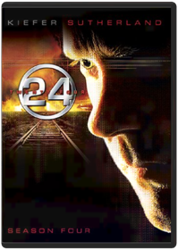 Emmy nominated for Best Drama series, 24 Season 4 is considered by fans and critics to be the best season yet. Starring Keifer Sutherland in his Emmy nominated role as Jack Bauer, 24 Season 4 received the highest broadcast ratings of the series' 4 year history.
The loaded 7-disk set includes a ground-breaking extra, shot on location during Season 5 production, which bridges Season 4 with Season 5 and gives clues about what is to come. 24 Season 4 on DVD is the only place to follow every moment of suspense, mystery and action of this worldwide smash hit television show!24: Season Five 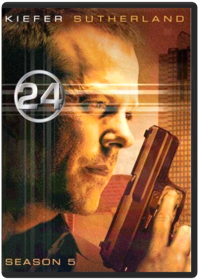 Jayne Atkins, Jude Ciccolella, Peter WellerEighteen months after faking his own death, Jack Bauer is forced to return to Los Angeles when it becomes apparent that the only four people who know he is still alive are being systemically targeted for assassination. The assassinations coincide with the signing of an anti-terrorism treaty between Russia and the U.S., leading Jack to suspect a link between the assassinations, the treaty, and a group of Russian terrorists. But as events slowly unfold it becomes apparent that the day's horrific events were originally set in motion by someone within our country's own administration – an individual with the power and resources to thwart Jack's every move.28 Days Later Danny Boyle, Toby JamesHailed as the most frightening film since The Exorcist, acclaimed Director Danny Boyle's visionary take on zombie horror "isn't just scary…it's absolutely terrifying" (Access Hollywood).
An infirmary patient awakens from a coma to an empty room…in a vacant hospital…in a deserted city. A powerful virus, which locks victims into a permanent state of murderous rage, has transformed the world around him into a seemingly desolate wasteland. Now a handful of survivors must fight to stay alive, unaware that the worst is yet to come…2001 Maniacs Lin Shaye, Tim SullivanTRAVELERS WHO TAKE A WRONG TURN WIND UP BECOMING THE PLANNEDMAIN COURSE FOR THE HUNGRY RESIDENTS OF A STRANGE LITTLE TOWN.The Abyss Conrad Buff IV, Howard E. Smith, Joel Goodman, James CameronMeticulously crafted but also ponderous and predictable, James Cameron's 1989 deep-sea close-encounter epic reaffirms one of the oldest first principles of cinema: everything moves a lot more slowly underwater. Ed Harris and Mary Elizabeth Mastrantonio, as formerly married petroleum engineers who still have some "issues" to work out, are drafted to assist a gung-ho Navy SEAL (Michael Biehn) with a top-secret recovery operation: a nuclear sub has been ambushed and sunk, under mysterious circumstances, in some of the deepest waters on earth, and the petro-techies have the only submersible craft capable of diving down that far. Every image and every performance is painstakingly sharp and detailed (and the computerized water creatures are lovely) but the movie's lumbering pace is ultimately lethal. It's the audience that ends up feeling waterlogged. For a guy who likes guns as much as Cameron (his next film after all, was the body-count masterpiece Terminator 2: Judgment Day), it's interesting that the moral balance here is weighted heavily in favor of the can-do engineers; the military types are end-justifies-the-means amoralists, just like the weasely government bureaucrats in Aliens. —David ChuteAkira Katsuhiro ÔtomoIn 1988, the landmark Anime film AKIRA, by director Katsuhiro Otomo, defined the cutting edge of Anime around the world. By today's standards, Akira remains the pinnacle of cel animation and retains the explosive impact of its highly detailed animation and its intensely violent saga of power and corruption.
Neo-Tokyo has risen from the ashes of World War III to become a dark and dangerous megalopolis infested with gangs and terrorists. The government seethes with corruption and only maintains a token control over the powerful military that prevents total chaos and hides the secrets of the past. Childhood friends Tetsuo and Kaneda plunge into Neo-Tokyo's darkest secret when their motorcycle gang encounters a military operation to retrieve an escaped experimental subject. Tetsuo, captured by the military, is subjected to experiments that make him a powerful psychic, but, unfortunately for Neo-Tokyo, Tetsuo's powers rage out of control and he lashes out at the world that has oppressed him! Nothing can stop the destructive forces that Tetsuo wields except possibly the last boy to destroy Tokyo.
11537 + Sticker and Insert as Follows (15,000 units only)
Sticker: Akira Tattoo Included Insert: Akira TattooAlias: The Complete First Season Barnet Kellman, Craig Zisk, Daniel Attias, Davis Guggenheim, Harry WinerGolden Globe Award-winning actress Jennifer Garner (Best Actress In A Television Series, 2002) is Sydney Bristow. Syd's not exactly your average grad student. Her life might appear normal, but she's hiding a secret life working as a spy for the CIA. Sydney's world is turned upside down when she learns she may work for the very enemy she thought she was fighting. Now she's entangled in a covert lifestyle where she is forced to question the allegiances of everyone, including those closest to her. Entertainment Weekly says ALIAS is "a spy-fi roller coaster of killer gadgets, double roundkicks, triple crosses, poignant confessionals, cliff-hangers, sliced-off fingers, conspiracies, outrageous outfits, exotic locales, flirtations, mythologies — and that's just before the first commercial break." Now see the 22 mesmerizing episodes that launched it all in this 6-disc set. You'll also experience never-before-seen extras that give you special access inside the world of ALIAS. See the show everyone has been talking about that has redefined series television. This edge-of-your-seat collection with its heart-pounding action of unpredictable plot twists will have you gasping for air and begging for Season 2!Alias: The Complete Second Season 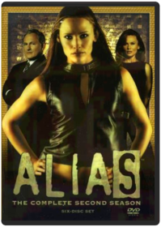 The action gets even hotter in ALIAS' sensational second season. Double agent Sydney Bristow faces the greatest challenge of her life when her mother, an enemy long thought dead, turns herself in to the CIA. As family relationships change and Sydney's friends take on new roles, her life becomes even more tangled and dangerous. It's "like watching a 2,000-piece puzzle assembled before your eyes," says Entertainment Weekly. Experience all 22 scintillating episodes of season two with exclusive bonus features that take you inside the world of ALIAS. Your favorite characters are back, joined by special guest stars, as Sydney fights to reclaim her life and the action builds to a spectacular climax. "Think Bond with feelings, Dostoyevsky with smart bombs," says GQ Magazine. This comprehensive six-disc collection will have you hooked from episode one's incredible start to the season's stunning final minute.Alias: The Complete Third Season The mystery and excitement reach unimaginable heights in ALIAS' spectacular third season. Special Agent Sydney Bristow awakens to an all-new world of intrigue from the very first moment of episode one, and her life is turned upside down as the action accelerates through the season's final frame. All 22 episodes plus must-see special features are included in this 6 disc set.Alias: The Complete Fourth Season 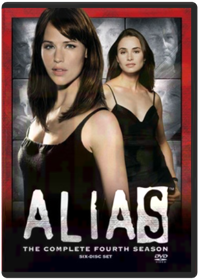 The action explodes in ALIAS' phenomenal fourth season. When Sydney leaves the CIA to join a powerful new Black Ops unit, she has no idea of the reunion in store for her. Family secrets are revealed and old adversaries come together for a year of betrayal, suspense, and breathtaking surprises. It's nonstop excitement — from the spectacular two-hour first episode to the stunning impact of the season's final seconds. Experience all 22 heart-stopping episodes of season four in a sensational six-disc set. ALIAS features "the best acting and most addictive plot lines on television," raves CNN.com. Now with exclusive bonus features, including a conversation with Jennifer Garner, bloopers, deleted scenes, and more, this spectacular set makes TV's most exciting show even better.Amelie Jean-Pierre JeunetNominated for five Academy Awards including Best Original Screenplay, this magical comedy earned overwhelming acclaim nationwide! A painfully shy waitress working at a tiny Paris cafe, Amélie makes a surprising discovery and sees her life drastically changed for the better! From then on, Amélie dedicates herself to helping others find happiness ... in the most delightfully unexpected way! But will she have the courage to do for herself what she has done for others?Tori Amos: Welcome to Sunny Florida Studio: Sony Music Release Date: 05/25/2004 Rating: NrAntz Eric Darnell, Tim JohnsonLIFE IS NOT A PICNIC FOR Z, A SMALL WORKER ANT WITH VERY BIG IDEAS. WHEN Z FALLS FOR THE BEAUTIFUL PRINCESS BALA, HIS ODDS OF WINNING HER OVER ARE ONE IN A BILLION. TO GET NOTICED, HE SWITCHES PLACES WITH SOLDIER ANT WEAVER.Appleseed Shinji AramakiEarth's last city, Olympus, rose from the ashes of a global war on the backs of Bioroids, artificial clones who make up half the city's population. Under the strict guidance of a supercomputer, humanity's last survivors enjoy an idyllic peace, but only on the surface Human terrorists within the military seek a return to power and clash with the government's ESWAT forces lead by the legendary soldier, Deunan Knute, and her boyfriend who is 75% machine. Retrieving the Appleseed will end the conflict, and Deunan alone holds its secret. The outstanding feature film based on the manga by SHIROW Masamune (Ghost In the Shell), directed by Shinji ARAMAKI (Bubblegum Crisis), and produced by SORI (Ping Pong) features a soundtrack by Boom Boom Satelites, Paul Oakenfold, Basement Jaxx and more and will be available from TOFU records. The DVD will feature high quality video encoded directly from the HD master in 16:9 anamorphic widescreen with 5.1 English Dolby Digital and DTS audio as well as the original Japanese 2.0 stereo and 5.1 DTS Dolby Digital soundtracks! This DVD also features commentary from both the director and the producer!Artificial Intelligence Steven SpielbergAudioslave: Live in Cuba Bill Yukich, Buck Huckler, Jonathan Covert, Lawrence JordanStudio: Sony Music Release Date: 10/11/2005 Run time: 130 minutesBatman: The Complete 1943 Movie Serial Collection 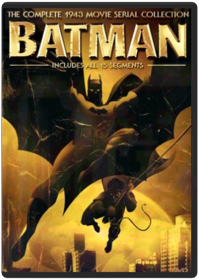 See how BATMAN really began. BATMAN started it all, and it's now available on DVD for the first time ever! Watch as mild-mannered Bruce Wayne (Lewis Wilson) becomes Batman, the classic superhero who, with Robin (Douglas Croft), protects Gotham City from the evil schemes of Dr. Tito Daka (J. Carrol Naish). Packed with adventures involving a radium-powered death ray, a deadly alligator pit, electronic zombies, and even the original Bat Cave, the BATMAN 2-disc set is a must-own DVD for any fan of the Caped Crusader!Batman: The Motion Picture Anthology 1989-1997 Joel Schumacher, Tim BurtonBATMAN TWO-DISC SPECIAL EDITION Batman (Michael Keaton) vs. The Joker (Jack Nicholson) in the amazing first extravaganza! With Kim Basinger. BATMAN RETURNS TWO-DISC SPECIAL EDITION The Bat (Michael Keaton), the Cat (Michelle Pfeiffer), the Penguin (Danny DeVito). And Christopher Walken, too! BATMAN FOREVER TWO-DISC SPECIAL EDITION Riddle me this: The Dark Knight (Val Kilmer) bat-battles Two-Face (Tommy Lee Jones) and the Riddler (Jim Carrey). With Nicole Kidman, Chris O'Donnell. BATMAN & ROBIN TWO-DISC SPECIAL EDITION Will Mr. Freeze (Arnold Schwarzenegger) put the world on ice? George Clooney wears the hero's cape. Also with Chris O'Donnell, Uma Thurman, Alicia Silverstone.The History of Beavis and Butt-Head Beavis and Butt-Head: The Mike Judge Collection Volume 1 A national treasure in an age of idiocy… When Beavis and Butt-Head first appeared on MTV more than a decade ago, critics dismissed them as brainless couch potatoes who did nothing but watch TV and make lewd jokes about bodily functions. Today we know they were ahead of their time. Beavis and Butt-Head's unique idiocy profoundly changed television, movies, pop culture and the world. This historic box set, personally edited by creator Mike Judge, includes their finest episodes, specials, promos and guest appearances that so enriched a grateful and stupid nation.Beavis and Butt-Head: The Mike Judge Collection Volume 2 When Beavis and Butt-Head first appeared on MTV more than a decade ago, critics dismissed them as brainless couch potatoes who did nothing but watch TV and make lewd jokes about bodily functions. Today we know they were ahead of their time. Beavis and Butt-Head's unique idiocy profoundly changed television, movies, pop culture and the world. This historic box set, personally edited by creator Mike Judge, includes their finest episodes, specials, promos and guest appearances that so enriched a grateful and stupid nation. Creator, Mike Judge has chosen his next set of favorite episodes & music videos for this collector’s edition box set.Beavis and Butt-Head: The Mike Judge Collection Volume 3 Mike JudgeHeroes. Villains. Visionaries. Butt-munches. Beavis & Butt-Head have been called a lot of things. Smart isn’t usually one of them, but groundbreaking is. In this third installment of the earth-shattering Mike Judge Collection, the boys are back with more of their wisecracking, fart-knockingly-genius ways. Whether they make your stomach hurt from laughing, or because you have to, you know…one thing is for sure, Beavis & Butt-Head changed comedy and animation forever.Beavis and Butt-Head Do America 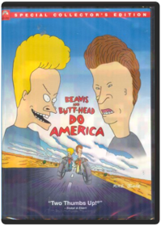 Mike Judge, Brian Mulroney, Mike de Seve, Yvette KaplanOur intrepid adolescent heroes wake up to find their beloved television stolen, and embark on an epic journey across America to recover it, and, who knows, maybe even score. On the way they encounter a murderous smuggler of a deadly virus and his treacherous wife, an FBI agent with a predilection for cavity searches, a couple of rather familiar looking ex-Motley Crue roadies, Mr. Van Dreesen singing "Lesbian Seagull", a little old lady and of course Mr. Anderson and his trailer. Can the Great Cornholio save the day? Uh-huh. Huh-huh.Beavis and Butt-Head: Butt-O-Ween/Do Christmas Mike Judge10 Episodes in total featuring: BUTT-O-WEEN: 'Tis the season for terrorizing your neighbors. And these classic Beavis and Butt-Head episodes have tricks and treats so sweet you'll get a stomachache. The hapless mischief-makers dress up for Halloween, hang out with a psychopathic murderer, screw up lame pranks, and go door to door selling candy. So, smash that pumpkin and turn off the lights. Beavis and Butt-Head are about to make you scream — with laughter. BEAVIS AND BUTT-HEAD DO CHRISTMAS: 'Tis the season to be cool, as Beavis and Butt-Head star in their own twisted versions of two holiday classics. The ghosts of Christmas past, present, and future struggle to teach a scrooge-like Beavis the true meaning of Christmas, while Charlie the Angel comes down from heaven to show Butt-Head how much better life would be without him. Will Beavis and Butt-Head learn their lesson? Does a snowflake have a chance in hell?Beavis and Butt-Head: Do Christmas Yvette KaplanBeavis and Butt-Head are (gasp) separated on Christmas Eve and each experiences a variation on classic holiday tales. While Beavis experiences a (sadly temporary) change of heart after visits from the spirits of Christmas past, present, and future, Butt-Head is visited by Charlie the Angel, who shows him how much better life would be without him ... if only he would just jump from that bridge. Somewhere, Dickens and Capra are turning in their graves, but this is a show that a B&B diehard could definitely watch once a year. —Tom KeoghBeavis and Butt-Head: Hard Cash Beavis, Butt-HeadBeavis and Butt-head are hard-up for cash so they try their hand at several entrepreneurial ventures. Includes 8 episodes: Hard Sell, Temporary Insanity, Beaverly Butt-Billies, Green Thumbs, Whiplash, Inventors, Yard Sale, Baby Sitting.Beavis and Butt-Head: Innocence Lost/Chicks N' Stuff Beavis and Butt-Head: Law-Abiding Citizens/There Goes The Neighborhood Beavis and Butt-Head: Troubled Youth/Feel Our Pain Beavis, Butt-headLike-New!! Part Of An Extensive Collection!! Mint Condition!!Beavis and Butt-Head: Work Sucks/The Final Judgement Beavis, Butt-Head15 Rude and Ridiculous EpisodesBeing John Malkovich Spike JonzeBEING JOHN MALKOVICH - DVD MovieBicentennial Man From the acclaimed director of MRS. DOUBTFIRE, Academy Award(R)-winner Robin Williams (1997, Best Actor, GOOD WILL HUNTING) stars in a delightfully heartwarming comedy about one extraordinary android who just wants to be an ordinary guy! It doesn't take long for the Martin family to realize Andrew (Williams), who was purchased as a mere "household appliance," is no run-of-the-mill robot! Funny, incredibly lifelike, and possessing an astounding level of creativity, this special machine soon takes on a life of his own — and eventually begins a centuries-long quest to achieve true humanity! A crowd-pleasing comedy hit — everyone is sure to love this touchingly entertaining movie treat!Big Comedy about a 12-year-old boy who wishes to be bigger, and overnight becomes a 35-year-old man, who discovers that perhaps being a child isn't so bad after all.
Genre: Feature Film-Comedy
Rating: PG
Release Date: 4-FEB-2003
Media Type: DVDBill & Ted's Excellent Adventure Stephen HerekKeanu Reeves (The Matrix) and Alex Winter (The Lost Boys) deliver "spirited performances" (The Hollywood Reporter) in the original righteous comedy about the two ditzy dudes from San Dimas, California. Also starring George Carlin, this hysterically funny historical comedy is a "snappily directed" (Time), "bouncy good time" (The Boston Globe) and a party that goes on and on! Bill (Winter) and Ted (Reeves) have spent so much time forming their rock band, The Wyld Stallyns, that they're flunking history. Whoa, duuuude! And when Ted's dad threatens to send him away to military school, Bill and Ted realize it could mean the most heinous end of The Stallyns! Luckily, a guardian angel from the future, Rufus (Carlin), has come to them with a most bodacious solution: a time-traversing phone booth to take them into the past to learn about the world from some of history's most influential personalities. Their journey through time turns out to be a blastÂ...but will they learn enough to pass their class?Bill & Ted's Bogus Journey Peter HewittAttention all righteous dudes and babes! Keanu Reeves (The Matrix, Speed) and Alex Winter (The Lost Boys) are back and better than ever with "a most triumphant sequel" (Boxoffice) to Bill & Ted's Excellent Adventure! Everything's excellent for everyone's favorite surf-speaking dudes! With their own apartment, a pair of bodacious princess babes and a spot on the upcoming "Battle of the Bands," life couldn't be any better! But all that goes down the tubes when Bill and Ted's evil robot twins kill the San Dimas duo and then take over their lives! Replaced on Earth by the bogus robots, the real Bill and Ted embark upon a most unwanted expedition'straight to Hell! Now, their only hope is to give the Grim Reaper a wedgie, and then challenge him to theUltimate Death Match of all time! But can Bill and Ted cheat death, save the world from evil, rescue the princess babes and be back in time to win the "Battle of the Bands"? Or will their heinous metal twins change the duo's destiny forever?Billy Madison Jeffrey Wolf, Tamra DavisFor Adam Sandler fans only, this dopey comedy features the former Saturday Night Live star as an overindulged rich guy whose father insists he repeat grades 1 through 12 before taking over the family business. The scenario is perfect for Sandler's infantile leanings (which he has fortunately outgrown in more recent movies), and for the most part the jokes about being too old and too big for the experiment are obvious. Chris Farley and Steve Buscemi turn up in uncredited cameo appearances, but otherwise the film is pretty dismissible, except for those diehards who can't get enough of Sandler. —Tom KeoghBjork: All Is Full of Love Studio: Wea-des Moines Video Release Date: 04/03/2001The Black Dahlia Brian De PalmaTwo police officers find their lives changed when asked to investigate the gruesome murder of a struggling actress.
Genre: Feature Film-Drama
Rating: R
Release Date: 1-MAY-2007
Media Type: DVDBlood: The Last Vampire 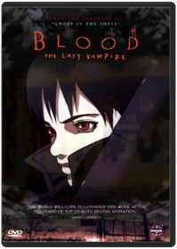 Hiroyuki KitakuboBLOOD:LAST VAMPIRE - DVD MovieThe Butterfly Effect The Director's Cut Blu-ray One disc Director's Cut!Cabin Boy 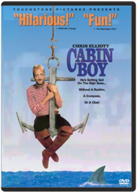 Adam ResnickGet ready for over-the-top hilarity when comedy original Chris Elliott (THERE'S SOMETHING ABOUT MARY, SCARY MOVIE 2) goes overboard in this hysterical high-seas misadventure that's sure to keep everyone laughing! Elliott stars as Nathanial Mayweather, a spoiled rich kid whose plans for a ritzy Hawaiian cruise backfire, finding him lost at sea with a gang of salty old sailors. And when his crusty cabin mates get a whiff of his highfalutin attitude, they give him every rotten chore on the boat — and take him on the wackiest adventure yet to sail the Seven Seas! Chart a course for fun with CABIN BOY — a truly wild comedy!Cabin Fever 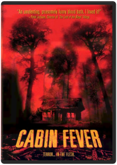 Nerve-rattling horror film follows five recent college graduates as they travel to a remote North Carolina cabin for the party of a lifetime. The pals' celebration is quickly cut short when one of their group is stricken with a mysterious flesh-eating virus. Now, the friends begin to turn on each other as they become overwhelmed with fear of the deadly disease. Rider Strong, Jordan Ladd, Joey Kern star. 95 min. Widescreen; Soundtracks: English Dolby Digital stereo; Subtitles: English, Spanish; audio commentary; bonus short; less violent alternate version; "making of" documentary; more.Cast Away Robert ZemeckisDVD -Cast Away Tom Hanks Discover the unforgettable journey of hope, courage and survivalChappelle's Show: Season 1 Andre Allen, Bill Berner, Bobcat Goldthwait, Neal Brennan, Peter LauerThe 2003 debut of Chappelle's Show on Comedy Central marked a high point for the cable channel, and now the entire, wildly creative first season can be seen, with hundreds of bleeps removed. That's not to say Chappelle's Show is perfect entertainment: there are too many moments among the 12 episodes here that descend into pointless scatology and booty fever. But for the most part, Chappelle, a talented comic slowly growing into greatness, is trying to push the sketch-humor envelope and succeeds at surprising us with original concepts and merciless execution.Chappelle's Show: Season 2 Andre Allen, Neal Brennan, Rusty Cundieff, Scott Vincent, Todd BroderComedian Dave Chappelle hosts this sketch-comedy show that parodies many of the nuances of race and culture.All 14 uncensored and unblurred episodes Extra stand-up comedy from Dave Over 1 hour of bloopers and deleted scenes 2 unaired Charlie Murphy stories The Rick James extended interview Audio commentary by Dave Chappelle and series co-creator Neal BrennanChappelle's Show: The Lost Episodes Todd BroderOutrageous, intelligent and provocative, Chappelle's Show - The Lost Episodes proves that Dave Chappelle is now and forever one of the funniest, most boundary-pushing comedians to ever appear on television.Clerks Kevin Smith, Scott MosierMiramax Home Entertainment is proud to present this amazing, three-disc collector's set that includes two versions of the original indie classic, a killer, brand-new, 90-minute documentary — "Snowball Effect: The Story Of CLERKS," and more never-before-seen bonus material than you can shake a salsa shark at!Clerks II Kevin SmithSequel to the cult comedy classic takes place 10 years later, finding Dante and Randall in their 30's, flipping burgers for a living at Mooby's, a fictional McDonald's-style fast-food chain. Many of the characters return, including Jay and Silent Bob. This could've been a train-wreck, but Smith pulls it off with solid writing and harsher humor than the original. DVD contains over 6 hours of bonus materials.This should be a solid seller throughout the rest of the year and beyond. See the ad on the inside back cover of this issue for additional information.Clerks: The Animated Series Steve Loter, Nicholas FilippiStudio: Buena Vista Home Video Release Date: 08/05/2003Crank Yankers: Season One Bill Berner, Bobcat Goldthwait, Hugh Martin, Kirk R. Thatcher, Ted MayCRANK YANKERS - SEASON 1 - UNCENSORED features outrageous crank calls from well-known comedians to real people and delivered to viewers through puppets called the "Crank Yankers" who live in the make-believe world called Yankerville. Special guest star voices include Dave Chappelle, Jack Black, Wanda Sykes, Tracy Morgan, Jimmy Kimmel and more.Crank Yankers: Season Two Volume One Tom SternGenre: Television, Comedies, Series, Comedy, Puppets, Television, Recommended, Reality-Based (Tv), Cable Tv/Cable Tv Shows, Comedians/Comediennes, Comedy Skits, Television Shows, Television/TV Series Description: Comic provocateurs Jimmy Kimmel and Adam Carolla (THE MAN SHOW) unleash another blast of politically-incorrect humor with their Comedy Central series CRANK YANKERS. Like a visual companion to The Jerky Boys, CRANK YANKERS finds Kimmel, Carolla, and several of their comedian friends—among them Sarah Silverman, Wanda Sykes, Tracy Morgan, and David Cross—making real prank phone calls to unsuspecting individuals and businesses while puppets act out the scenario on screen. With ample doses of outrageous improvisation and a cast of recurring characters that includes the lascivious Spoonie Luv, confused senior citizen Elmer Higgins, cantankerous war veteran Dick Birchum, and, of course, mentally challenged teen Special Ed, CRANK YANKERS parlays the bastions of bad taste into oddly compelling hilarity. This collection includes the first 15 episodes of season two. Release Notes: DVD Features: Region 1 Keep Case 2-Disc Set Full Frame - 1.33Crank Yankers: Season Two Volume Two Jimmy Kimmel, Adam CorollaCrank Yankers Season Two Volume Two - UNCENSORED - Don't miss all the hot puppet action in Volume Two of the Yankers Second Season. Featuring phone calls with Bobby Fletcher, OCD Ken, Elmer Higgins and your old friend Special Ed, plus salacious celebrity cranks from the likes of Jimmy Kimmel, Gilbert Gottfried, Robert Smigel, Kathy Griffin, Jeff Goldblum, and Dane Cook saying all the rude, offensive little things only an anonymous voice on the end of a phone can get away with! Bonus Materials: - 4 exclusive audio calls from Fred Armisen, Eminem Jim Florentine, and Jimmy Kimmel - 1 unaired call Deaf Frat GuyCrouching Tiger, Hidden Dragon 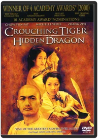 Tim Squyres, Ang LeeAn epic set against the breathtaking landscapes of ancient China, Crouching Tiger, Hidden Dragon, combines the exhilarating martial arts choreography by Yuen Wo-Pind (The Matrix) with the sensitivity and classical storytelling of an Ang Lee film. The result is something truly unexpected: romantic, emotionally powerful entertainment.The Crow Trilogy Alex Proyas, Bharat Nalluri, Tim PopeThe collection includes THE CROW: Legendary Brandon Lee plays Eric Draven, a rock guitarist who, along with his finacee, is killed by a ruthless gang of criminals. One year after his death, Eric returns — watched over by a hypnotic crow — to seek revenge. THE CROW: CITY OF ANGELS: The murder victim (Vincent Perez) of an evil drug cartel is brought back to life by a mysterious crow to exact revenge on his killers one by one! THE CROW: SALVATION: Wrongly executed for the murder of his girlfriend, Alex Corvis (Eric Mabius) returns to find the real killer — aided by his girlfriend’s sister (Kirsten Dunst) ... and the mysterious crow!Cube John Sanders, Vincenzo NataliOne part math lesson, one part "Twilight Zone" and one part Jean-Paul Sartre, Canadian filmmaker Vincenzo Natali's compelling sci-fi suspense tale follows six strangers who find themselves trapped in a maze of identical, interconnected cubical chambers loaded with deadly traps. Can the six overcome mutual distrust and suspicion to escape their mysterious high-tech cage? Nicole de Boer, David Hewlett, Wayne Robson, Maurice Dean Witt star. 90 min. Widescreen (Enhanced); Soundtrack: English Dolby Digital 5.1; Subtitles: English, Spanish; audio commentary; deleted scenes; storyboards; art gallery.Cube 2: Hypercube Andrzej SekulaKari Matchett, Geraint Wyn Davies, Neil Crone. Life itself depends on how quickly eight strangers can solve the riddle of the hypercube, a bizarre 4th dimension cube they woke up in with no idea of how they got there and where our laws of physics mean nothing. 2002/color/94 min/R/widescreen.Cube Zero Ernie BarbarashEvery nightmare has a beginning. In this prequel to the cult hit Cube, one of the most successful sci-fi thrillers of the last decade, a new group of unwilling participants frantically moves through an ominous construct of cube-shaped rooms. Each room holds the threat of hideously inventive and painful death. Finding the real exit, however, may not offer the freedom one seeks.Dark Angel: Season 1 David NutterDawn of the Dead 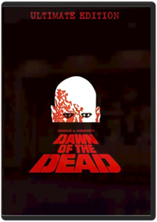 Dario Argento, George A. RomeroIn 1968, director George A. Romero brought us "Night of the Living Dead." It became the definitive horror film of its time. Eleven years later, he would unleash the most shocking motion picture experience for all times. As modern society is consumed by zombie carnage, four desperate survivors barricade themselves inside a shopping mall to battle the flesh-eating hordes of the undead. This is the ferocious horror classic, featuring landmark gore effects by Tom Savini, that remains one of the most important – and most controversial – horror films in history. When there’s no more room in Hell, the dead will walk the earth: The original "Dawn of the Dead" is back!The Devil Wears Prada David FrankelBased on the hilarious best-selling novel, this sinfully funny movie starring Academy Award(r) winner Meryl Streep* and Anne Hathaway is "sensationally entertaining in every way" (maxim). As assistant to impossibly demanding New York fashion magazine editor Miranda Priestly (Streep), young Andy Sachs (Hathaway) has landed a job that "a million girls would die for." Unfortunately, her heaven-sent appointment as Miranda's personal whipping girl just might be the death of her!Die Another Day 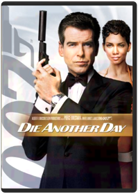 Lee TamahoriWhen his top-secret mission is sabotaged, James Bond (Pierce Brosnan) finds himself captured by theenemy, abandoned by MI6 and stripped of his 00-license. Determined to get revenge, Bond goes head-to-head with a sultry spy (OscarÂ(r) winner* Halle Berry), a frosty agent (Rosamund Pike) anda shadowy billionaire (Toby Stephens) whose business is diamonds but whose secret is a diabolical weapon that could bring the world to its knees! Bristling with excitement and bursting with explosivespecial effects, Die Another Day is an adrenaline-pumping thrill-ride with "stunts and non-stop action [that] will astonish you" (Jeffrey Lyons, WNBC-TV)! *2001: Actress, Monster'sBallDogma 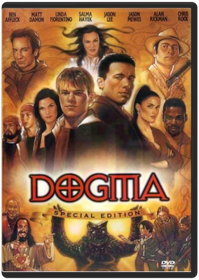 Wayward angels Ben Affleck and Matt Damon, exiled in Wisconsin for millennia, discover that a New Jersey church holds the theological key to their getting back into Heaven. Problem is, if they succeed, all of creation will be obliterated. As faith-affirming as it is controversial, Kevin Smith's off-the-wall satire follows a quirky band of crusaders, from abortion clinic worker Linda Fiorentino and "13th apostle" Chris Rock to the ubiquitous Jay and Silent Bob, trying to keep the angels from reaching their goal. 128 min. Widescreen (Enhanced); Soundtracks: English Dolby Digital 5.1, Dolby Digital Surround, Spanish Dolby Digital Surround, French Dolby Digital Surround; Subtitles: English, French, Spanish; audio commentary; documentary; storyboard comparisons; deleted scenes; outtakes; biographies; more.El Mariachi / Desperado Robert RodriguezAntonio Banderas, Carlos Gallardo, Quentin Tarantino, Cheech Marin. Includes El Mariachi (1993/81 min/Spanish Surround/English subtitles) and Desperado (1995/103 min/English DD 5.1). 2 DVDs. Color/NR/widescreen.Once Upon a Time in Mexico Robert RodriguezRobert Rodriguez returns with the mythic guitar-singing hero, El Mariachi (Antonio Banderas), in the third installment of the El Mariachi/Desperado trilogy. The saga continues as El Mariachi makes his way across a rugged landscape on the trail of Barrillo (Willem Dafoe), a kingpin who is planning a coup against the president of Mexico. Enlisted by Sands (Johnny Depp), a corrupt CIA agent, El Mariachi demands retribution, and the adventure begins. The character, made famous by Banderas, remains a slinger of guitars and guns, a tragic and bloodied hero, but a survivor forever.Empire Records 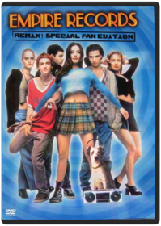 Allan MoyleThe director of Pump Up the Volume cranks it up another notch with Empire Records Remix! Special Fan Edition, including 16 minutes of never-before-seen footage. A comedy about an eventful day in the lives of the young slackers, doers and dreamers who work at a bustling record store. Stars Renee Zellweger, Liv Tyler, Anthony La Paglia, Ethan Embry and Robin Tunney. Gin Blossoms, the Cranberries, Toad the Wet Sprocket, Cracker, Evan Dando, Better Than Ezra and more hot alternative rock underscores virtually every scene.Ernest Goes to Camp 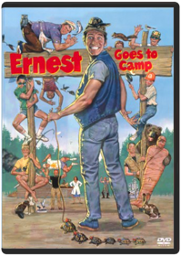 John R. Cherry IIIErnest P. Worrell, America's lanky, lovable know-it-all (played to perfection by comedian "Hey, Vern! KnoWhutImean?" Jim Varney), stars as the hero of this frenetic, side-splitting comedy. The handyman at Kamp Kikakee, Ernest achieves his greatest ambition and becomes a camp counselor to a gang of juvenile delinquents from the Midstate Boys Detention Center! Not only must Mr. Advice-for-every-possible-occasion wrangle the wayward youths, but he has to save the camp from the ruthless clutches of a giant mining company too. Comic pandemonium ensues in the laugh riot of the summer season ... or any ol' time!The Evil Dead In the fall of 1979, Sam Raimi and his merry band headed into the woods of rural Tennessee to make a movie. They emerged with a roller coaster of a film packed with shocks, gore, and wild humor, a film that remains a benchmark for the genre. Ash (cult favEvil Dead II 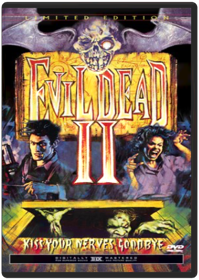 Sam RaimiWriter-director Sam Raimi's extremely stylized, blood-soaked follow-up to his creepy Evil Dead isn't really a sequel; rather, it's a remake on a better budget. It also isn't really a horror film (though there are plenty of decapitations, zombies, supernatural demons, and gore) as much as it is a hilarious, sophisticated slapstick send-up of the terror genre. Raimi takes every horror convention that exists and exaggerates it with mind-blowing special effects, crossed with mocking Three Stooges humor. The plot alone is a genre cliché right out of any number of horror films. Several teens (including our hero, Ash, played by Bruce Campbell in a manic tour-de-force of physical comedy) visit a broken-down cottage in the woods—miles from civilization—find a copy of the Book of the Dead, and unleash supernatural powers that gut every character in sight. All, that is, except Ash, who takes this very personally and spends much of the of the film getting his head smashed while battling the unseen forces. Raimi uses this bare-bones story as a stage to showcase dazzling special effects and eye-popping visuals, including some of the most spectacular point-of-view Steadicam work ever (done by Peter Deming). Although it went unnoticed in the theaters, the film has since become an influential cult-video favorite, paving the way for over-the-top comic gross-out films like Peter Jackson's Dead Alive. —Dave McCoyArmy of Darkness Bruce CampbellBound in human flesh, inked in blood, and amazingly hard to pronounce, the ancient "Necronomicon," or "Book of the Dead," transports a department store clerk and his '73 Oldsmobile into England's Dark Ages to face legions of undead beasts in director Sam Raimi's (A Simple Plan) outrageously hilarious sword-and-sorcery epic starring Bruce Campbell (The Evil Dead).Family Guy: Volume 1: Seasons 1 & 2 Harold McKenzie, Karyn Finley ThompsonMeet the Griffins: Peter, the big, lovable oaf who always says what’s on his mind. Lois, the doting mother who can’t figure out why her baby son keeps trying to kill her. Their daughter Meg, the teen drama queen who’s constantly embarrassed by her family. Chris, the beefy 13-year-old who wouldn’t hurt a fly, unless it landed on his hot dog. Stewie, the maniacal one-year-old bent on world domination. And Brian, the sarcastic dog with a wit as dry as the martinis he drinks. The animated adventures of his outrageous family will have your whole family laughing out loud.Family Guy: Volume 2: Season 3 Harold McKenzie, Karyn Finley ThompsonFamily Guy Volume 2 sees the return of America's most outrageous animated family with all 21 Season Three episodes, plus one never-before-seen episode - "When You Wish Upon A Weinstein" banned from TV, and only available in this collection!
In this hilarious final volume, the Griffin family faces all-new dilemmas, including Brian's unintentional foray into directing porn, Stewie's rants on national TV, Meg's date with a nudist and Lois' Yuletide insanity.
Meanwhile, Peter is surprised to discover Lois was once a groupie, and his son, Chris, is more "endowed" than he is.Family Guy: Volume 3 Harold McKenzie, Karyn Finley ThompsonFans will have to wait no longer for the next Volume of Family Guy on DVD! The hilarious first part of Emmy nominated Season 4 will have you laughing like you've never laughed before. Edgier and more irreverant than ever, you'll forget you've ever heard the term "Politically Correct!" The must-have DVD of the season — any self-respecting guy will own Family Guy Volume 3 on November 29th.Family Guy: Volume 4 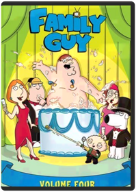 Harold McKenzie, Karyn Finley ThompsonFasten your sofa belts for another fiendishly futile attempt at world domination for Stewie-and a diaper full of fun for "Family Guy" fans around the globe! Boasting laughs as big as Peter's waistline, these 14 hilarious episodes from Season Four find television's most outrageous animated family in all sorts of comically compromising situations. Don't miss out on this Fox TV DVD best seller—a 3 disc set available for $39.98 & $54.98.Family Guy: Stewie Griffin: The Untold Story Pete Michels, Peter ShinIn this exclusive 88 minute DVD premiere, featuring brand new, never before seen content, Stewie, the maniacal baby genius, is distracted from his plans for world domination when he sees a man who looks just like him on television. Convinced that this man must be his real father (after all, how could he possibly share genetic material with the dimwitted Peter?), Stewie sets off on a cross-country road trip to find him. But his incredible journey leads him to discoveries far more vile and shocking that anything found in his diaper.The Fantasia Anthology Ben Sharpsteen, Bill Roberts, Charles A. Nichols, Don Hahn, Eric GoldbergAlong with Fantasia and Fantasia 2000, the anthology set contains a third disc that examines a segment of both movies in detail. Each segment has an introduction that has experts (including Leonard Maltin), producer Roy E. Disney, or theFight Club David Fincher"'Fight Club' pulls you in, challenges your prejudices, rocks your world and leaves you laughing" (Rolling Stone). Brad Pitt ("12 Monkeys", "Seven"), Edward Norton ("Primal Fear," "American History X") and Helena Bonham Carter ("Mighty Aphrodite," "A Room With A View") turn in powerful "performances of which movie legends are made" (Chicago Tribune) in this action-packed hit. A ticking-time-bomb insomniac (Norton) and a slippery soap salesman (Pitt) channel primal male aggression into a shocking new form of therapy. Their concept catches on, with underground "fight clubs" forming in every town, until a sensuous eccentric (Bonham Carter) gets in the way and ignites an out-of control spiral toward oblivion.Final Fantasy VII: Advent Children Keiichi Kojima, Takeshi Nozue, Tetsuya NomuraFINAL FANTASY VII: Advent Children continues the game’s storyline in this CG-animated film, featuring non-stop action and exciting visual effects. Two years have passed since the ruins of Midgar stand as a testament to the sacrifices made in order to bring peace. However, the world will soon face a new menace. A mysterious illness is spreading fast. Old enemies are astir. And Cloud (Burton), who walked away from the life of a hero to live in solitude, must step forward yet again...
Backed by a full team of video game extraordinaires, the film was directed by Tetsuya Nomura and Takeshi Nozue, written by Kazushige Nojima and produced by Shinji Hashimoto and Yoshinori Kitase.Forrest Gump Hanks is Forrest Gump, who despite being mentally challenged, tried hard, is honest and places his trust in luck. He tells his life story to anyone who sits next to him at a bus stop, and the flashbacks follow Forrest and his good heart through some of the highlights of modern American history.Through the use of digital imagery, Forrest appears to interact in scenes with John F. Kennedy, John Lennon and George Wallace. "Life is like a box of chocolates."Four Rooms Quentin Tarantino, Allison Anders, Alexandre Rockwell, Robert RodriguezDon't miss the fun in this hilariously sexy comedy that has Antonio Banderas (THE MASK OF ZORRO), Madonna (EVITA), and a sizzling all-star cast checking in for laughs! It's Ted the Bellhop's (Tim Roth — PULP FICTION) first night on the job ... and the hotel's very unusual guests are about to place him in some outrageous predicaments! It seems that this evening's room service is serving up one unbelievable happening ... after another! Also featuring Academy Award(R) winner Marisa Tomei (1992 Best Supporting Actress, MY COUSIN VINNY), FOUR ROOMS is a wild night of highly original comedy entertainment you'll enjoy ... without reservations!Freddy vs. Jason Ronny YuIt's the battle everyone's been DYING to see! Teenagers find themselves caught in the middle of a battle between two legendary boogeymen: Jason Voorhees and Freddy Krueger. Who will win in the bloodiest and goriest showdown in history?
DVD Features:
3D Animated Menus
Alternate endings:Alternate opening and Ending
Audio Commentary:Commentary with Director Ronny Yu, Actors Robert Englund (FREDDY) & Ken Kirzinger (JASON)
Comparison Scenes
DVD ROM Features
Deleted Scenes:18 Deleted Scenes with optional commentary from Director Ronnie Yu and Executive Producer Douglas Curtis
Documentaries:—Behind the scenes coverage of the films development - including screenwriting, set design, make up, stunts and principle photography —Visual effects exploration
Featurette
Full Screen Version:Both fullscreen and Widescreen on one disc
Interviews
Music Video:Ill Nino "How Can I Live"
Storyboards
TV Spot:Lots of TV spots
Theatrical TrailerFriday the 13th 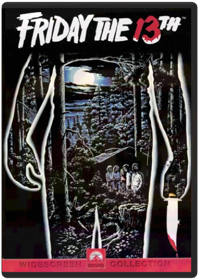 This splatter flick, along with John Carpenter's Halloween, helped spawn the great horror-movie movement of the '80s, not to mentioneight sequels, many of which had nothing to do with the films that preceded them. It also gave birth to Jason Voorhees, one of the three biggest horror-movie psychos of the modern era (the other two being Halloween's Michael Myers and A Nightmare on Elm Street's Freddy Krueger). Forever duplicated, the original Friday the 13th popularized a number of themes and techniques that today are now clichés: the increasingly gory murders, the remote forest location, the anonymous and nubile cast, the murderer as cult hero, and, of course, the moral that if you have sex, you will die, very painfully. Still, if you have to see a Friday the 13th movie, this is the one to check out. A group of eager (and horny) teenagers decide to reopen Camp Crystal Lake, which 20 years earlier was closed after the shocking and mysterious murders of two amorous camp counselors. You can take it from there, as the teens get picked off one by one, during a dark and stormy night; of course, their car won't start and there's no phone. The ending stole shamelessly from Brian De Palma's Carrie, but it still provides a slight if campy shock. Look for a young Kevin Bacon as the requisite stud—you can tell that's what he is because when the cast appears in swimsuits, he's wearing a Speedo—who's the beneficiary of the film's best murder sequence, an arrowhead to the throat. Right after having sex, of course. —Mark EnglehartFriday the 13th Part 2 Steve MinerJust when you thought it was safe to go back to camp . . . here's even more heart-pounding terror.
Five years after the horrible bloodbath at Camp Crystal Lake, all that remains is the legend of Jason Voorhees and his demented mother, who had murdered seven camp counselors. At a nearby summer camp, the new counselors are unconcerned about the warnings to stay away from the infamous site. Carefree, the young people roam the area, not sensing the ominous lurking presence. One by one, they are attacked and brutally slaughtered. Suspense and screams abound in this compelling thriller.Friday the 13th Part 3 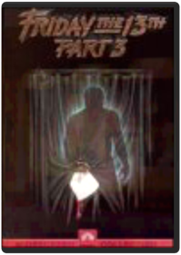 Steve MinerHAVING ESCAPED IN THE LAST EPISODE, JASON IS BACK, HOCKEY MASKAND ALL, TO CONTINUE HIS MURDEROUS RAMPAGE ACROSS CRYSTAL LAKE.Friday the 13th: The Final Chapter Joseph ZitoHaving been revived at the hospital jason returns to crystal lake to meet more victims. Studio: Paramount Home Video Release Date: 08/22/2006 Starring: Kimberly Beck Wayne Grace Run time: 91 minutes Rating: R Director: Joseph ZitoFriday the 13th Part V: A New Beginning Danny SteinmannJason is back, hockey mask and all. And he's up to his old maniacal tricks in Friday The 13th, Part V: A New Beginning. This time he seems to have set his sights on the young patients at a secluded halfway house. And more than a few of his teen targets end up in half, in quarters...you name it, Jason does it.Friday the 13th Part VI: Jason Lives Tom McLoughlinAs a child, Tommy Jarvis did what many others died trying to do. He killed Jason Vorhees, the mass murderer who terrorized the residents of Crystal Lake. But now, years later, Tommy is tormented by the fear that maybe Jason isn't really dead.
So Tommy and a friend go to the cemetery to dig up Jason's grave. Unfortunately for Tommy, (and very unfortunately for his friend), instead of finding a rotting corpse, they discover a well rested Jason who comes back from the dead for another bloody rampage in Friday The 13th - Part VI: Jason Lives.Friday the 13th Part VII: The New Blood John Carl BuechlerEver since homicidal maniac Jason Voorhees got trapped in chains at the bottom of Crystal Lake, the nearby summer camp has operated without a hitch . . . without a murder. But one of this season's happy campers has brought along a deadly secret.
Tina Shepherd can see the future and levitate objects. Her doctor knows just how dangerous telekinesis can be, but he's out to exploit her, not help her. And now it's too late. Tina has accidentally unchained Jason from his watery grave, and the bloodbath is underway.
Tina's special powers are her only hope for survival. But what chance does a teenage girl have against an axe-wielding maniac?Friday the 13th Part VIII: Jason Takes Manhattan 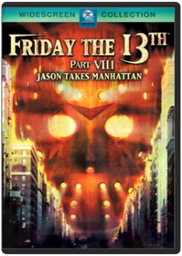 Steve Mirkovich, Ted Pryor, Rob HeddenIt's the scariest thing to hit the Big Apple since Steinbrenner bought the Yankees! What will happen to the streets of New York when the unstoppable killer lands in search of fresh victims? Find out in the eighth installment in the interminable horror series. Jensen Daggett, Scott Reeves, Peter Mark Richman, Kane Hodder star. 96 min. Widescreen (Enhanced); Soundtracks: English Dolby stereo, French Dolby stereo; Subtitles: English. NOTE: This Title Is Out Of Print; Limit One Per Customer.Jason Goes to Hell Adam MarcusScare yourself into purgatory as the body count continues. The relentless, hockey-masked killer Jason Voorhees returns for more bloody cranage in this ninth chapter of the frightfully successful Friday the 13th series. Year: 89 Director: Adam Marcus Starring: John D. LeMay, Kari Keegan, Erin Gray
DVD Features:
Audio Commentary
DVD ROM Features
Interactive Menus
Other
Theatrical TrailerJason X 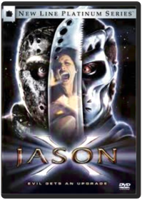 James IsaacLegendary Friday The 13th killer Jason Voorhees returns for the tenth time, this time stalking victims aboard a space ship in the year 2455. DON'T MISS OUT ON THE HALLOWEEN EVENT OF 2002! Trick or treat this year with Jason! Consumers will definitely demand this title for late-night scares or holiday-themed parties. JASON/FRIDAY THE 13TH SERIES IS A STRONG $228 MILLION COMBINED BOX-OFFICE FRANCHISE!* GORE SCORES! Horror Genre still scares up frightfully high business: Jeepers Creepers 324% Hannibal 274% Final Destination 273% Hollow Man 248% The Cell 247% LOW VHS FLAT PRICING @ $35.005. FIRST JASON/FRIDAY THE 13TH DVD WITH SIGNIFICANT ADDED VALUE! Fans of the series will buy the DVD for this alone. Paramount has only released 1-6 with a trailer as the only extra. Jason X will have two documentaries, a jump-to-a-death feature and other "tricks and treats" for fans to crave. FROM EXECUTIVE PRODUCER SEAN S.CUNNINGHAM, THE CREATOR OF THE CLASSIC ORIGINAL FRIDAY THE 13TH. *Internet Movie Database 4/12/02**Video Store Magazine 4/8/02Futurama: Volume 3 Studio: Tcfhe Release Date: 08/22/2006 Run time: 552 minutes Rating: NrFuturama: Volume 4 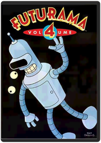 Volume 4 includes the following episodes —
Season Four: Love and Rocket, Leela’s Homeworld, Where No Fan Has Gone Before
Season Five: Crimes of the Hot, Jurassic Bark, A Taste of Freedom, Kif Gets Knocked up a Knotch, Less than Hero, Teenage Mutant Leela’s Hurdles, The Why of Fry, The Sting, The Farnsworth Parabox, Three Hundred Big Boys, Spanish Fry, Bend Her, Obsoletely Fabulous, Bender Should Not Be Allowed on TV, The Devil’s Hands are Idle Play Things
Included Easter Eggs –
Star Trek panel (consists of three clips)
Table Read Audio (played over a static card)
Tied Together as a Single Asset (writer Goodman on guest voice actors; writer Goodman on script changes; actor Di Maggio on Bender)Futurama: Bender's Big Score 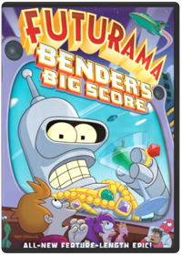 Dwayne Carey-HillThis DVD includes the all-new feature-length epic. Extras include complete commentary by Matt Groening, David X. Cohen, and cast member; all new, full-length episode of Everyone Loves Hypnotoad, including TV commercials of the future; mind bending FuturamFuturama: The Beast with a Billion Backs Peter AvanzinoThe thrilling conclusion to Futurama: Benders Big Score.
Bender and the planet express crew must contend with a massive cosmic team that sends the world into panic.Get a Life: Volume 1 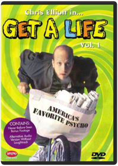 David MirkinWhenever a new network gets a start, some weird things make it onto the air. That's the only possible explanation for Get a Life, Chris Elliott's short-lived series in which he starred as a thirtysomething paperboy, Chris Peterson, who still lived at home with his folks. (His dad, strangely enough, was played by Chris's real-life father, Bob Elliott, a respected comedian in his own right.)
The two episodes on Volume 1 exemplify what Get a Life was all about: a straight-faced spoof of sitcom conventions that managed to avoid all of the conventions that spoofs usually observe. That it wasn't laugh-out-loud funny is beside the point; Elliott's fans know that his brand of humor is often diametrically opposed to conventional humor.
Though the plots are fairly conventional—in "The Prettiest Week of My Life," Peterson enrolls in the Handsome Boy Modeling School, where he competes with another student, Sapphire; "Bored Straight" finds Peterson trying to rehabilitate a gang of teens—the shows themselves are anything but. —Randy SilverGhost in the Shell Mamoru OshiiDVD. Japanimation. Hit animated feature film by Mamoru Osh ii. In Engl & Japanese w/ subtitled. Bio, mking-of spec. & promo trailer.Gojira Terry MorseThis package contains:
* Godzilla (1954 Japanese Edition-english subtitles)
* King of the Monsters (1956 U.S. Release Edtion-english v/o dub)
Featuring:
* Audio commentaries
* Original trailers
*"Making of the Suite" Featurette
*"Godzilla: Story Development" featuretteGodzilla: King of the Monsters Kazuji Taira, Ishirô HondaThe first of the Godzilla movies, and the most somber and serious in tone, Godzilla, King of the Monsters was originally a 98-minute Japanese horror film, until a U.S. company bought the rights and reissued the film at its current 79 minutes, replacing sequences involving a Japanese reporter with new inserts of a dour, pipe-smoking Raymond Burr. True to the fashion of cautionary monster movies, Godzilla has arisen due to nuclear radiation—a 400-foot, fire-breathing dinosaur resurrected in Tokyo Bay—and proceeds to devastate Tokyo. Hardly a bogus building is left unbusted, nary a toy tank unmelted, by the reptilian rogue, until scientists discover another weapon of awesome destruction that just might stop him. The special effects are impressive, with the filming done so as to mask the fact that the monster is just a guy in a rubber suit, working better here than in the sequels, where they seem to have given up any pretense to that fact, in favor of flamboyant effects and battle sequences that more often than not are delightfully, unabashedly juvenile. The DVD includes a wonderful 25-minute documentary on movie monsters, pieced together from old trailers. This DVD offers your choice of Dolby 5.1 Surround or Mono, cropped-screen or letterboxed, and a plethora of other features. It is also available in a boxed set with four more of the best Godzilla flicks by director Inoshiro Honda. —Jim GayGodzilla Raids Again (Action) Godzilla is back, and this time he’s not alone! Godzilla and the spiny monster Anguirus are in a heated battle on a small Japanese island. As the threat of destruction mounts, two Japanese heroes muster their courage for the final showdown with Godzilla.King Kong vs. Godzilla The two mightiest monsters of all time battle in the thrilling adventure classic, King Kong vs. Godzilla. When an underhanded pharmaceutical company goes to a remote tropical island to steal King Kong for advertising purposes, they get more than they bargained for when the gigantic ape attacks an unsuspecting village and an enormous octopus. Meanwhile, far below the sea, a submarine crew unleashes reptilian terror when they melt a block of ice and release the ferocious Godzilla from his icy lair. When both destructive monsters descend on Tokyo, it's a fight that holds the future of mankind in the balance in this knock-out film that was the first theatrical release to bring its larger-than-life contenders to the big screen in glorious color.King Kong vs. Godzilla Ishirô HondaMothra vs Godzilla (Action) After a fierce typhoon, Mothra’s gigantic egg washes ashore Japan. Meanwhile Godzilla reawakens and tramples across the land, heading straight for the big egg. Can Mothra save her offspring from Godzilla? Will Japan survive this epic monster battle?Godzilla vs Mothra Ryohei Fujii, Ishirô HondaMore visually splendid and imaginatively written than the other Godzilla sequels, this (the fourth in the series) starts when Mothra's gigantic egg washes ashore in Japan, having been dislodged from Mothra Island by a hurricane. Two tiny twin girls (sometimes singing like dual-diminutive Dorothy Lamours) from the island come to plead for the return of the egg by the greedy business guys who bought it for a tourist attraction, but to no avail. Radiation from nuclear testing revives Godzilla from the earth, who proceeds to threaten the egg and the cities, unless Mothra and his larvae hatched from the egg can stop him. The battle sequences between Mothra and Godzilla, and between Godzilla and the larvae, are spectacularly vivid and colorful. The DVD gives you a choice of cropped-frame or letterboxed in terrific Tohoscope, Dolby Digital 5.1 Surround or Mono, and some more extras. Oddly, the DVD contains no time code, so you never know how far into the movie you are at any given point. It is also available in a boxed set with four of the other best Godzilla flicks by director Inoshiro Honda. —Jim GayGhidorah: The Three-Headed Monster Ishiro Honda(Sci-Fi) Ghidorah, the Three-Headed Monster — A prophetess from Venus foretells cataclysmic disasters! Godzilla, Mothra and Rodan reappear in Japan, wreaking havoc! A giant meteor crashes into the mountains and the three-headed, fire-spitting space dragon King Ghidorah emerges! As the Venusian's prophecies come true, assassins from a tiny Asian kingdom hunt her down, while the Earth monsters must decide whether to settle their petty differences and join forces against the extraterrestrial enemy!Invasion of Astro-Monster (Sci-Fi) Invasion of Astro-Monster/Godzilla vs. Monster Zero — Aliens from Planet X borrow our monsters for a little extermination project, but they've got something else up their sleeves: world domination! Using mind-control technology, these vinyl-and-sunglasses wearing spacemen turn Godzilla, Rodan and King Ghidorah loose in Japan, demanding Earth's surrender! It's up to American astronaut F. Glenn, his galaxy-trotting buddy Fuji, and nerdy inventor Tetsuo to break the aliens' hold on the monsters and save our planet from certain doom.Godzilla vs Monster Zero Ryohei Fujii, Ishirô HondaIn the darkness behind Jupiter there lurks a heretofore undiscovered planet, Planet X, boasting beings of superior intelligence. The Planet X-ers are forced to live underground because of the havoc wreaked on the surface by Ghidra, the three-headed monster. Once discovered by our astronauts, including the ultra-hip Nick Adams (spouting such phrases as "That's right, baby!" with innocent conviction), the Planet X-ers propose that they transport Godzilla and Rodan from Earth to their planet to help rid them of the Ghidra menace. Only, as it turns out, they have a dastardly plan to use the bipedal behemoth and his flighty friend to conquer the Earth, harnessing their destructive force with "magnetic waves." And it almost works, but for the ingenuity... well, you get it. There can be no better way to spend a Saturday afternoon than watching monsters battle it out, while Nick Adams speaks in his accustomed English to others speaking dubbed English (really Japanese), like they all know what each other is saying. The DVD gives you a choice of cropped-screen or letterboxed in scrumptious Tohoscope, Dolby Digital 5.1 Surround or Mono, and some more extras. It is also available in a boxed set with four of the better Godzilla flicks by director Inoshiro Honda. —Jim GayFrankenstein Conquers The World During WWII, a human heart taken from a certain lab in Europe (Dr. Frankenstein’s) is kept in a Japanese lab. When it gets exposed to the radiation of the bombing of Hiroshima, the heart grows in size, mutates and sprouts appendages, and eventually grows into a complete body and escapes. Later, a feral boy with a certain physical deformity (a large head with a flat top) is captured by scientists who refer to the boy as Frankenstein. The creature grows to the height of 20 feet, escapes again, fights police and army, and is practically indestructible. Later, a reptilian monster goes on a rampage. Eventually the Frankenstein creature and the reptile face off in a terrible battle.Godzilla vs The Sea Monster Godzilla battles an evil sea shrimp.
Genre: Science Fiction
Rating: UN
Release Date: 1-JAN-2007
Media Type: DVDSon of Godzilla Ryohei Fujii, Jun FukudaNo Description Available.
Genre: Science Fiction
Rating: PG
Release Date: 6-DEC-2005
Media Type: DVDKing Kong Escapes It's King Kong to the rescue when a giant robot threatens to destroy Tokyo in the gripping King Kong Escapes! The action begins when the conniving Dr. Who builds a robot Kong in order to retrieve a highly radioactive element for his mysterious benefactor, Madame X. When the robot proves less than reliable, the devious duo scheme to kidnap the real Kong from his remote island home of Mondo. But interfering with their plans are the heroic trio of U.S. Cmdr. Carl Nelson, Lt. Jiro Nomura, and Kong's current crush, Lt. Susan Miller. It's up to them to outwit the greedy ape-nappers in this sci-fi adventure that takes Kong to unprecedented heights of excitement.Destroy All Monsters 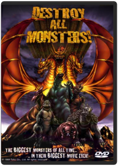 Ryohei Fujii, Ishirô HondaWhen a malevolent race of Moonwomen try to put the big hurt on Earth, it's up to (take a deep breath) Godzilla, Rodan, Mothra, Anguilas, Minya, Manda, Baragon, and Spigas to resist their evil mind control and make the world safe for monster (and human) kind! Long unavailable on video, Destroy All Monsters is the crowning achievement of the Japanese monster genre, with wall-to-wall action, cheesily magnificent special effects, and a final nine-to-one battle royale (against the awesome three-headed dragon known to fans as King Ghidorah) that's guaranteed to get even the most passive viewer noisily bopping around the room. A badly dubbed, logic-defying, supremely gonzo blast, presented in a widescreen format that allows the watcher to see every single rubber scale. The original title for this quintessential creature bash translates as Godzilla Electric Battle Masterpiece, which just about says it all. —Andrew WrightGodzilla's Revenge Masahisa Himi, Ishirô HondaSounds like what happens when you visit too many off-the-beaten-path sushi shops, doesn't it? Godzilla's Revenge is number 10 in the Godzilla series, directed by the first and best of the Godzilla directors, Inoshiro Honda. Essentially a childhood power fantasy, the film concerns Ishiro (the director's namesake), a youngster whose mind-tripping dreams on Monster Island help him gain the resolve to rout a gang of criminals and the neighborhood bullies who've been plaguing him. Part child's fantasy story, part monster movie with extended battle sequences, Godzilla's Revenge may be one of Honda's most consistently entertaining films, despite the fact that the colorful monster footage is reused from earlier movies. This is recommended fare for the juvenile or juvenile-at-heart. The DVD gives you a choice of cropped-frame or letterboxed in tantalizing Tohoscope, Dolby Digital 5.1 Surround or Mono, and some more extras. It is also available in a boxed set with four of the other best Godzilla flicks by director Inoshiro Honda. —Jim GayGodzilla vs Hedorah Yoshimitsu BannoNo Description Available.
Genre: Science Fiction
Rating: PG13
Release Date: 1-JAN-2007
Media Type: DVDGodzilla vs Gigan Yoshio Tamura, Jun FukudaNo Description Available.
Genre: Science Fiction
Rating: PG
Release Date: 1-JAN-2007
Media Type: DVDGodzilla vs Mechagodzilla Jun FukudaNo Description Available.
Genre: Science Fiction
Rating: PG
Release Date: 1-JAN-2007
Media Type: DVDTerror of Mechagodzilla Yoshitami Kuroiwa, Ishirô HondaIn 1974, Inoshiro Honda, the original and best Godzilla director, returned after a five-year absence to direct this 20th-anniversary commemoration to Gojira (the original Japanese name for Godzilla, before the West Anglicized it). This is the fifteenth film in the Godzilla series, and the eleventh by director Honda. Yet again the aliens (from the third planet of the black hole, whatever that means; they don't really provide directions) stage a takeover of Earth, this time with the aid of Mechagodzilla and Titanosaurus (they're just what they sound like). They owe the mad scientist Mafuni for the use of Titanosaurus, who in turn owes the aliens for resurrecting his daughter, Katsura, badly hurt in an accident, albeit now as a cyborg with the ability to control their two mecha-monsters. It shapes up as the fight of the century when Godzilla is pressed into service for our side. The battling behemoths afford the most dramatic and vivid fight scenes in all of Godzilladom in this one. Let's hope the aliens don't win; they're so smug. —Jim GayGodzilla vs Mechagodzilla II Miho Yoneda, Takao OkawaraIn response to Japan's request for a countermeasure against Godzilla, UN engineers construct Mechagodzilla, a giant robotic version of Godzilla. Nonetheless, Godzilla proves himself a force to be reckoned with against this monstrosity and battle ensues.Godzilla vs Space Godzilla / Godzilla vs Destoroyah 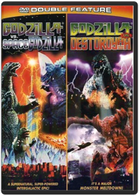 Kensho Yamashita, Takao OkawaraGodzilla Vs. Spacegodzilla
The powers of telepathy enter the ranks of high technology in this supernatural, super-powered Godzilla(r) adventure for the '90s! The military minds behind Japan's special Counter G Bureau enter the New Age with Project T, in which a telepathic amplifier is implanted in Godzilla(r)'s brain in order to bring the giant monster under control. And just in time! In a faraway galaxy, the mutant Space Godzilla turns its evil eyes toward earth, planning to terminate Godzilla(r) and conquer the planet for its own. With the Japanese Mafia infiltrating Counter G, the Bureau needs all the help it can get. Will Japan's greatest enemy Godzilla(r) become its closest ally? Amid all the smoke and high-tech firepower, not even the psychics know for sure!
Godzilla Vs. Destoroyah
With a super-charged blast from his nuclear past, a new Godzilla(r) emerges from his own ashes, radioactive and ready to take on Tokyo! The great lizard's nuclear energy is increasing by the minute, and a monster meltdown threatens to vaporize the planet. But when mutant micro-organisms unleash a plague of destruction, Godzilla(r) is Japan's only hope to destroy them. This victory creates Godzilla(r)'s deadliest challenge yet: the Oxygen Destroyer. And with Godzilla(r) Junior pulled into the ring, only the Super XIII can put the deep freeze on this three-way monster melee. The action is hot and the special effects are chillin' in this high-tech, high-powered Godzilla(r) thriller!Rebirth of Mothra / Rebirth of Mothra II Kunio Miyoshi, Okihiro YonedaMegumi Kobayashi, Sayaka Yamaguchi. Mothra emerges to save the Earth from two horrific creatures in Rebirth of Mothra (1996/106 min.) and Rebirth of Mothra II (1997/100 min.). Color/NR/widescreen.Godzilla Roland EmmerichMatthew Broderick, Hank Azaria, Jean Reno. Godzilla came roaring back into theaters in the year 1998 as the world was introduced to a whole new version of everybody's favorite giant lizard. With an all-star cast and mind-blowing special effects, this Godzilla is more roller-coaster thrill-ride than monster movie. Either way, it's a heck of a lot of fun. 1998/color/139 min/PG-13.Godzilla 2000 Yoshiyuki Okuhara, Takao OkawaraThe first Japanese Godzilla movie released in the U.S. in 15 years! Only he can save Earth from the aliens who plan to conquer our planet in this exciting sci-fi adventure. 2000/color/99 min/PG/widescreen.Godzilla vs Megaguirus Masaaki TezukaGodzilla is back! This time, Japan has a new weapon: Megaguirus! Now a 3-way battle begins between Godzilla, Megaguirus and the humans beings! Will Godzilla win? Will humanity survive?Godzilla, Mothra and King Ghidorah: Giant Monsters All-Out Attack Shûsuke KanekoFifty years ago, the Japanese Defense Forces killed Godzilla(r) or so they thought. When a series of terrifying natural disasters begin to plague Japan, including the inexplicable offshore sinking of a U.S. submarine, a mystic old man warns his nation that Godzilla(r) has come back to destroy Japan as revenge for all the souls lost in the Pacific War. When mere military might can not squash the monster, the mystic man awakens the Holy Beasts of Yamato - King GhidorahTM, Mothra(r) and BaragonTM, sleeping giants that protected Japan in ancient times. These untamed mammoth beasts take on Godzilla(r) with frightening supernatural brute power that has been 2,000 years in the making. Tradition and technology collide in this chilling high-tech, cutting-edge fable.Godzilla Against Mechagodzilla Yumiko Shaku, Shin Takuma. Godzilla battles a relentless mechanical double. In Japanese with English audio & subtitles. 2002/color/84 min/NR/widescreen.Godzilla and Other Movie Monsters 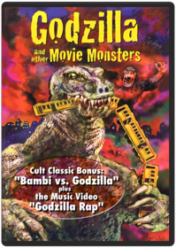 Godzilla & Other Movie MonsterHo, Godzilla! Here comes the not-so jolly green giant and pals Rodan, Gamera, Gorgo, Megalon and King Kong in a 30-ton salute to big monster movies. See Godzilla's greatest hits, thanks to ferocious film clips and more. 120 min. Standard; Soundtrack: English.GoldenEye Martin CampbellPierce Brosnan ignites the screen in his first adventure as the unstoppable James Bond. When a powerful satellite system falls into the hands of a former ally-turned-enemy, only 007 can save the world from an awesome space weapon that — in one short pulse — could destroy the earth!Hannibal Ridley ScottAnthony Hopkins is "perverse perfection" (Rolling Stone) in his return to the role of Dr. Hannibal Lecter, the sophisticated killer who comes out of hiding to draw FBI agent Clarice Starling (Julianne Moore) into a high-stakes battle that will test her strength, cunning and loyalty.He-Man & She-Ra: A Christmas Special Bill Reed, Ernie SchmidtThe holiday season comes to the magical worlds of Eternia and Etheria in He-Man and She-Ra A Christmas Special! When Orko accidentally winds up on Earth during the Christmas winter he befriends two children who share stories of the goodwill and merriment that the holidays embrace. When they finally return to Eternia the holiday spirit is spread amongst the entire Royal Palace but this overflowing goodwill attracts the unwelcome attention of Horde Prime and Skeletor. Will the combined power of He-Man She-Ra and the spirit of Christmas be enough to stop them?System Requirements:Running Time: 45 minutesFormat: DVD MOVIE Genre: CHILDREN/FAMILY UPC: 787364630790He-Man and the Masters of the Universe: Season 1 Volume 1 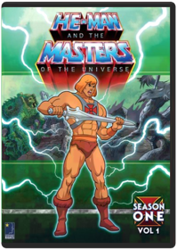 Excitement and adventure a wait those who enter the magical land of Eternia! Join He-Man and the Masters of the Universe as they battle against Skeletor and his crew of dastardly villains in the greatest adventures ever told!These first 33 episodes are only the beginning of the most phenomenal stories ever created in animation! Relive the excitement as you enjoy the adventures of the universe s greatest warriors. The power has returned!System Requirements: Running Time 710 MinFormat: DVD MOVIE Genre: CHILDREN/FAMILY Rating: NR UPC: 787364649495He-Man and the Masters of the Universe: Season 1 Volume 2 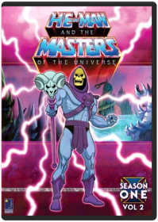 The battle for power continues on the world of Eternia! Join He-Man and the Masters of the Universe® as they battle against Skeletor and his crew of detestable villains in the greatest adventures ever told!These 32 episodes continue the saga of the most phenomenal stories ever created in animation! Relive the excitement as you enjoy the adventures of the universe s greatest warriors. The power has returned!System Requirements:Running Time 688 Mins.Format: DVD MOVIE Genre: CHILDREN/FAMILY Rating: NR UPC: 787364651894He-Man and the Masters of the Universe: Season 2 Volume 1  Hostel & Hostel II - Double Feature - Blu-ray Eli RothNew version, free of defects!
Shocking Horror Double Feature!
Hostel (Unrated Director's Cut)- Presented by Quentin Tarantino (Kill Bill, Vol. 1 & 2) and directed by Eli Roth (Cabin Fever), Hostel is a shocking and relentless film in the tradition of Saw about two American backpackers (Jay Hernandez, Friday Night Lights and Derek Richardson, Dumb and Dumberer) in Europe who find themselves lured in as victims of a murder-for-profit business.
... an old-school exercise in shock and gore, with scary ideas and unblinking splatter. - Empire
Hostel Part II (Unrated Director's Cut)- Presented by Quentin Tarantino (Kill Bill, Vols. 1 & 2) and written and directed by Eli Roth (Hostel, Cabin Fever), Hostel Part II is the shocking and gruesome sequel about the underground torture ring where rich businessmen pay to torture and murder their victims.
...up-to-the-minute shivers.. - Entertainment Weekly
Technical Specifications:
Hostel -1080p2.35:1 aspect ratioEnglish 5.1 DTS-MA audioSDH English subtitles
Hostel Part II -1080p2.35:1 aspect ratioEnglish 5.1 DTS-MA audioFrench 5.1 audioSDH English subtitlesHouse of 1000 Corpses Rob ZombieShock metal superstar Rob Zombie's affectionately gore-filled tribute to 1970s horror films follows four young people whose stop at a roadside gas station/fried chicken stand/sideshow museum leads to their less-than-willing visit to the title mansion, where a family of bloodthirsty maniacs, mutants and assorted psychos dwells. Rainn Wilson, Sheri Moon, Bill Moseley, Karen Black, and Sid Haig as Captain Spaulding star. 88 min. Widescreen (Enhanced); Soundtrack: English Dolby Digital stereo; Subtitles: English, Spanish; interviews; audio commentary; audition footage; isolated music score; featurette; theatrical trailers.How the Grinch Stole Christmas  How the Grinch Stole Christmas Ron HowardInside A Snowflake Exists The Magical Land Of Whoville. Inwhoville, Live The Who'S An Almost Mutated Sort Of Munchkinlikepeople. All The Who'S Love Christmas, Yet Just Outside Of Theirbeloved Whoville Lives The Grinch. The Grinch Is A Nastycreature That Hates Christmas.In Living Color: Season 1 Keenen Ivory Wayans, Matt Wickline, Paul MillerTwo snaps up for In living Color on DVD! This is the first season of the comedy that crossed every line with their raunchy, crude humor and introduced a new generation of talent including Jim Carrey, The Wayans and many more. See classic sketches Men on Film and Homey the Clown on this 3-disc set that is loaded with behind the scenes extras.In Living Color: Season 2 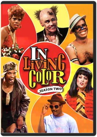 Keenen Ivory Wayans, Matt Wickline, Paul MillerJim Carrey, David Alan Grier, Keenen Ivory Wayans. It's hard to count how many stars got their start on In Living Color , but this second season collection boasts quite a few-Jennifer Lopez, Jim Carrey, Damon Wayans and many more. 26 episodes on 4 DVDs. 1991-92/color/5 hrs/NR/fullscreen.In Living Color: Season 3 Keenen Ivory Wayans, Adam Small, Fax Bahr, Morris Abraham, Paul MillerIt’s triple the fun with Season Three of TV’s most outrageous sketch show, In Living Color. With its off-the-wall humor and in-your-face look at celebrities and pop culture, Keenen Ivory Wayan’s creation has a comic boldness all its own. The new season introduces Jamie Foxx to an already outstanding cast. The Fly Girls return with a sexy newcomer named Jennifer Lopez. And the edgy writing is back with a vengeance. This 3-disc Collector’s Edition features all 30 hilarious Season Three episodes—and it’s gonna rock your world!In Living Color: Season 4 Keenen Ivory Wayans, Adam Small, Fax Bahr, Morris Abraham, Paul MillerNonstop laughs are in the house with Season Four of In Living Color on DVD! No celebrity was too sacred and no current event was too controversial for this Emmy-winning hit show that pushed the boundaries of sketch comedy—with hilarious results. So join the talented Wayans family (including new cast member Marlon Wayans), along with Jim Carrey, Tommy Davidson, David Alan Grier, Jamie Foxx and the super-sexy fly girls for a howling good time with this 3-disc Collector's Edition, featuring all 33 hilarious Season Four episodes!The Adventures of Indiana Jones Indiana Jones, an archaeologist and adventurer, battles Nazis and travels the globe searching for rare and mystical artifacts.
Track: 1: Indiana Jones & The Raiders Of The Lost Ark,Track: 2: Indiana Jones & The Temple Of Doom,Track: 3: Indiana Jones & The Last Crusade,Track: 4: Bonus Disc
Media Type: DVD
Artist: INDIANA JONES COLLECTION
Title: INDIANA JONES COLLECTION
Street Release Date: 10/21/2003
Domestic
Genre: ACTION / ADVENTUREThe Iron Giant Something humongous is among us! A young boy rescues a huge robot which has rocketed to earth from space - and tries to protect the genial giant from a nosey government agent and the military. A captivating animated feature that's part metal, part magic and all heart.
DVD Features:
DVD ROM Features
Documentary
Music Video
Theatrical TrailerJackie Brown Quentin TarantinoQuentin Tarantino presents the premiere of the JACKIE BROWN COLLECTOR'S SERIES DVD, complete with your favorite award-winning movie, all-star cast, and never-before-seen footage. What do a sexy stewardess (Pam Grier), a street-tough gun runner (Samuel L. Jackson), a lonely bail bondsman (Academy Award®-nominee Robert Forster), a shifty ex-con (Robert DeNiro), an earnest federal agent (Michael Keaton), and a stoned-out beach bunny (Bridget Fonda) have in common? They're six players on the trail of a half million dollars in cash! The only questions are ... who's getting played ... and who's gonna make the big score! Combining an explosive mix of intense action and edgy humor, Tarantino scores again with the entertaining JACKIE BROWN!Jaws 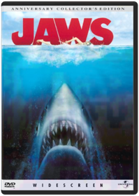 Laurent Bouzereau, Steven SpielbergFilled with terror and adventure, Jaws remains an immersive experience that continues to make entire generations afraid to go into the water.Jay and Silent Bob Strike Back Kevin SmithPacked with stars including Ben Affleck (GOOD WILL HUNTING), Chris Rock (NURSE BETTY), Shannon Elizabeth (AMERICAN PIE), Jason Lee (ALMOST FAMOUS), and more, this wildly irreverent comedy is actor/director Kevin Smith's hilarious finale to the adventures of Jay and Silent Bob that began in CLERKS and ran through MALLRATS, CHASING AMY, and DOGMA! When best buddies Jay (Jason Mewes) and Silent Bob (Smith) discover that a major motion picture is being based on their likenesses, they head for Hollywood to claim the big movie money they deserve. But when the dopey duo learn that they've been cut out of the cash, they set out to sabotage the flick at all costs! Featuring a host of celebrity cameos set to a hot hit soundtrack, Jay and Silent Bob's raucous cross country road trip is a crash course in the rules of the road with a nonstop assortment of outrageous characters that will have you laughing out loud!The Jerk Carl ReinerThat wild and crazy guy, Steve Martin, makes his film-starring debut in the wacky comedy hit The Jerk. Steve portrays Navin Johnson, adopted son of a poor black sharecropper family, whose crazy inventions lead him from rags to riches and right back to rags. Along the way, he's smitten with a lady motorcycle racer, survives a series of screwball attacks by a deranged killer, becomes a millionaire by inventing the "Opti-grab" handle for glasses - and shows why he's one of the hottest comic performers in the world.Jillian Michaels: Frontside For Beginners  Kindergarten Cop Ivan ReitmanArnold Schwarzenegger stars as an undercover cop posing as a kindergarten teacher in order to catch a dangerous criminal. Once he wrangles his young charges, as well as the affections of a beautiful teacher (Penelope Ann Miller), he prepares for a final showdown with his intended prey in this "Totally enjoyable" (Ralph Novak, People Magazine) action-comedy from director Ivan Reitman.King Kong King Kong Two Disc Collectors Edition, Plus two additonal DVDs, The Son of Kong & Mighty Joe Young, King Kong Tin Collector's Box, Reprints of King Kong Souvenir Programs, 10 Movie Sheet Postcards, 6 Dazzing Hours of King Kong Video/Audio Extras, 2 fascinating New Features on Mighty Joe Young, & Movie TrailersKing Kong 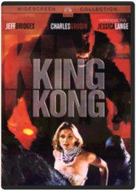 John GuillerminThe Big Apple is again besieged by the monstrous King Kong. Jeff Bridges and Jessica Lange star in this ambitious remake of the 1933 original, which adds a great deal of camp and good fun to the story, Again, the gargantuan ape battles attacking aircraft high above the streets of New York, this time plunging from the top of the World Trade Center to his death amidst thousands of horrified onlookers. King Kong won an Oscar for special effects, and the horror and the thrills are brought anew to another generation in this classy production.King of the Hill: Season 1 All 13 episodes from the debut season—including the pilot, "Luanne's Saga," "Westie Side Story," "Shins of the Father" and "Plastic White Female"—are featured in a three-disc set. 5 hrs. total. Standard; Soundtracks: English Dolby Digital Surround, French Dolby Digital Surround, Spanish Dolby Digital Surround; Subtitles: Spanish; audio commentary; deleted scenes; featurettes; music video; TV spots; more. **13 episodes on 3 discs. 5 hrs.**King of the Hill: Season 2 Adam Kuhlman, Chris Moeller, Cyndi Tang-Loveland, Gary McCarver, Jack DyerKing of the Hill: Season 3 Adam Kuhlman, Chris Moeller, Cyndi Tang-Loveland, Dominic Polcino, Gary McCarverKing of the Hill: Season 4 Adam Kuhlman, Allan Jacobsen, Anthony Lioi, Boo Hwan Lim, Chris MoellerAll 24 episodes from season four—including "Peggy Hill: The Decline and Fall," "A Beer Can Named Desire," "To Kill a Ladybird," "Naked Ambition," and "Peggy's Fain Fair"—are featured in a three-disc set. 9 1/2 hrs. total. Standard; Soundtracks: English Dolby Digital Surround, Spanish Dolby Digital Surround; Subtitles: English, Spanish. **24 episodes on 3 discs. 9 1/2 hrs.**King of the Hill: Season 5 Adam Kuhlman, Allan Jacobsen, Anthony Lioi, Boo Hwan Lim, Cyndi Tang-LovelandKING OF THE HILL SEASON 5 - DVD MovieKing of the Hill: Season 6 Mike JudgeThe Hill family is back, and Arlen, Texas has never been wilder or funnier! From love triangles to gay rodeos, through beer shortages and Vietnam flashbacks, and from Mexico to Japan by way of the Renaissance Faire, this is King of the Hill’s craziest season yet! Did we mention Jimmy Carter?It’s all here...and more. Life in Arlen will never be the same!Kiss Kiss Bang Bang A murder mystery brings together a private eye, a struggling actress, and a thief masquerading as an actor.KMFDM: WWIII Tour 2003 WWIII TOUR 2003 - DVD MovieLand of the Dead 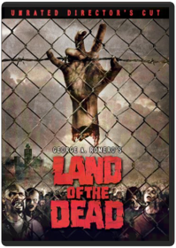 George A. RomeroLegendary filmmaker and godfather of zombie films George A. Romero returns to the genre he created to bring you his ultimate zombie masterpiece that's unlike anything you have ever seen before. A group of hardened mercenaries are in an action-packed race to stop the destruction of mankind from a depraved army of the dead that have evolved into more advanced and threatening creatures. Cast includes Dennis Hopper, Simon Baker and John Leguizamo.The Lawnmower Man Brett LeonardExperiments change a simple lawnmower man into a superhuman being. The stage is set for a dr. Jekyll and mr. Hyde struggle for the control of jobes mind the professor wanting to help mankind the other a group wanting to create an invincible war machine. Studio: New Line Home Video Release Date: 02/03/2004 Starring: Pierce Brosnon Jeff Fahey Run time: 108 minutes Rating: R Director: Brett LeonardLeap Year When Anna’s (Amy Adams) four-year anniversary to her boyfriend passes without an engagement ring, she decides to take matters into her own hands. Inspired by an Irish tradition that allows women to propose to men on Leap Day, Anna follows Jeremy (Adam Scott) to Dublin to propose to him. But after landing on the wrong side of Ireland, she must enlist the help of the handsome and carefree local Declan (Matthew Goode) to get her across the country. Along the way, they discover that the road to love can take you to very unexpected places.The Life Aquatic with Steve Zissou Wes AndersonInternationally famous oceanographer Steve Zissou (Bill Murray) and his crew — Team Zissou — set sail on a expedition to hunt down the mysterious, elusive — possibly nonexistent — Jaguar Shark that killed Zissou's partner during the documentary filming of their latest adventure. They are joined on their voyage by a young airline co-pilot, who may or may not be Zissou's son (Owen Wilson), a beautiful journalist (Cate Blanchett) assigned to write a profile of Zissou, and his estranged wife and co-producer, Eleanor (Anjelica Huston). They face overwhelming complications including pirates, kidnapping, and bankruptcy. Oscar(R)-nominated writer-director (Best Original Screenplay, THE ROYAL TENENBAUMS, 2001) Wes Anderson has assembled an all-star cast that also includes Willem Dafoe, Jeff Goldblum, Michael Gambon, Noah Taylor, and Bud Cort in this wildly original adventure-comedy.Linkin Park: Breaking the Habit BREAKING THE HABIT - DVD MovieLinkin Park: Frat Party at the Pankake Festival Bill Berg-Hillinger, Joseph HahnTrack Listing:
1. Intro
2. Papercut
3. Beginnings
4. Points Of Authority
5. The Live Show
6. Crawling Video Shoot
7. Crawling
8. Touring
9. Cure For The Itch
10. The Band
11. One Step Closer
12. The Future
13. In The End
14. EndLinkin Park: Live in Texas Kevin McCullough, Kimo ProudfootStudio: Wea-des Moines Video Release Date: 11/18/2003Linkin Park: Minutes to Midnight Linkin Park: Reanimation Linkin Park, Jonathan Davis, Aaron Lewis, Jay Gordon, Chali 2NAThis is not just another remix album. All the songs of Hybrid Theory have been reinterpreted, plus 'High Voltage' and 'My December.' Just a few of the remixers/featured artists (since the list is so long) include Jay Gordon (Orgy), Evidence (Dilated Peoples), Aaron Lewis (Staind), Chali 2Na (Jurassic 5) & Black Thought (the Roots). Digipak. 2002.The Hobbit Arthur Rankin Jr., Jules BassA wonderous animated version of J.R.R. Tolkein's classic about the magical world of Middle Earth and the adventures of lovable Bilbo Baggins. Featuring the voices of Orson Bean and John Huston. Year: 1977 Director: Jules Bass, Arthur Rankin Jr. Starring: Orson Bean, John HustonThe Lord of the Rings Animated adaptation of J.R.R. Tolkien's classic tale of Middle Earth.
Genre: Children's Video
Rating: PG
Release Date: 1-JUN-2004
Media Type: DVDThe Lord of the Rings: The Return of the King Arthur Rankin Jr., Jules BassFRODO THE HOBBIT IS BACK TO BATTLE THE EVIL FORCES THAT INVADED MIDDLE EARTH IN THE RETURN OF THE KING.Lost: The Complete First Season From J.J. Abrams, the creator of Alias, comes the action-packed adventure that became a worldwide television event. Stranded on an island that holds many secrets, 48 people must band together if they hope to get home alive. Now you can experience the nonstop excitement and mystery of every episode, from the show's stunning first minute to its spectacular finale, on a seven-disc set. Presented in a widescreen theatrical format with 5.1 Surround Sound and bursting with more than eight hours of original bonus features — including unaired Lost flashbacks from the final episode — Lost is a real find.Lost: The Complete Second Season 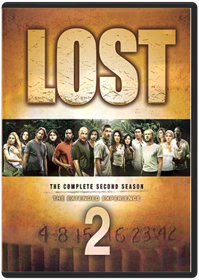 4, 8, 15, 16, 23, 42. Push the button and prepare to be blown away by the groundbreaking television event USA Today calls "TV's best series." The multiple Emmy® Award-winning drama reaches new heights in its spectacular second season as the survivors of Oceanic Flight 815 discover they are not alone in their battle against "the Others," and a contested decision to open the hatch reveals a new realm of mystery and intrigue. Prepare yourself for the DVD experience of Season Two, complete with over 8 hours of original bonus material you can't see anywhere else — including unaired original flashbacks — and you'll discover for yourself why "everything happens for a reason."Lost in Translation 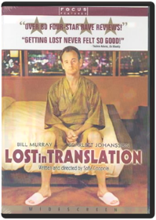 Bob Harris (Bill Murray) and Charlotte (Scarlett Johansson) are two Americans in Tokyo. Bob is a movie star in town to shoot a whiskey commercial, while Charlotte is a young woman tagging along with her workaholic photographer husband (Giovanni Ribisi). Unable to sleep, Bob and Charlotte cross paths one night in the luxury hotel bar. This chance meeting soon becomes a surprising friendship. Charlotte and Bob venture through Tokyo, having often hilarious encounters with its citizens, and ultimately discover a new belief in life's possibilities. Shot entirely on location in Japan, Sofia Coppola's Lost in Translation is a valentine to the nature of close friendships and to the city of Tokyo. Ms. Coppola's film, from her original screenplay, contemplates the unexpected connections we make that might not last - yet stay with us forever. Starring: Bill Murray, Scarlett Johansson, Giovanni Ribisi, Anna Faris Directed by: Sofia CoppolaMallrats Paul Dixon, Kevin SmithThis is a tale of two loafers who spend the day at the mall after their girlfriends tell them to kiss off for good. After all, there's something for everyone at the mall, including a way to win back their babes. Cast includes Jason Lee, Jeremy London, Shannen Doherty, Claire Forlani and Ben Affleck. Written & Directed by Kevin Smith.Marilyn Manson: Demystifying the Devil 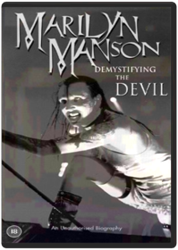 Chris NicholasDiehard supporters of everyone's favorite anti-Pope will want Demystifying the Devil, if only because Marilyn Manson is all things to all of them—cutting-edge nu-nasty rock theater act or slacker antihero, you takes your choice. However, this very, very unauthorized—and unintentionally hilarious—biography (there's no footage of young Brian himself or his immediate musical circle other than a few seconds of blurry concert material) is also informative viewing for the merely curious. It mostly consists of rambling anecdotes from people who either were associated with him before he became famous or were ejected from his entourage, and it soon becomes clear that MM was and remains a genuinely talented visionary. If you're a fan, you'll have your faith confirmed. If you're not, you'll still end up feeling strangely pleased that both Manson and those he left behind are getting the respective levels of attention they deserve. —Roger ThomasMoby: Play Jonas Åkerlund, Moby, David LaChapelle, Fredrik Bond, Mike MillsThis, the perfect companion piece to the multi-platinum CD Play, highlights Moby as not just an artist and musician, but a personality. Includes 10 music videos for 7 songs, 20 minutes of live footage from "Later with Jools Holland," Moby's 90-minute "Megamix" (the best of the "Play" remixes set to original, incredible visuals) and his hilarious 20-minute home movie "Give an Idiot a Camcorder." Videos: Bodyrock (U.K. auditions), Honey, Find My Baby, Porcelain (U.K. version), Natural Blues, Bodyrock (U.K. version), Run On, Why Does My Heart Feel So Bad, Natural Blues (animated), Porcelain. Live: Natural Blues, Porcelain, Go, New Dawn Fades (If We Can), Machete, Hymn, Everloving, Porcelain (acoustic). DVD-ROM feature: Re-mix 2 Moby songsMulholland Dr. David LynchLaura Harring, Naomi Watts. Betty is a small-town girl who comes to Hollywood with stars in her eyes and looking for sidewalks of gold. Instead, she finds an amnesiac woman in her aunt's apartment in David Lynch's cryptic, delusional story about ambition and desire. 2001/color/120 min/R/widescreen.Napoleon Dynamite Jared HessNapoleon Dynamite is a new kind of hero, complete with a tight red 'fro, sweet moon boots, and skills that can’t be topped. Napoleon spends his days drawing mythical beasts, duking it out with his brother, Kip, and avoiding his scheming Uncle Rico. When tNausicaa of the Valley of the Wind Hayao MiyazakiMiyazaki's masterpiece features the voices of Alison Lohman, Patrick Stewart, Uma Thurman and Edward James Olmos.The Neverending Story Wolfgang PetersenEnter a fantastic world where the strongest power is the power of the imagination. When he comes across a book that can project the reader into its story, a young boy becomes part of a wondrous adventure in a land of flying dragons, evil wolves, gnomes, and a warrior-child who must fight to save it from destruction. Barret Oliver, Noah Hathaway, Tami Stronach, Gerald McRaney star. 92 min. Standard and Widescreen (Enhanced); Soundtracks: English Dolby Digital Surround stereo, French Dolby Digital Surround stereo; Subtitles: English, French, Spanish; theatrical trailer.The Nightmare on Elm Street Collection Chuck Russell, Jack Sholder, Rachel Talalay, Renny Harlin, Stephen HopkinsFor two generations Freddy Krueger has scared the dickens out of movie goers. Now the most-dreamed-about name in horror history can be seen from beginning to end in this must-have collection.Nine Inch Nails Live: And All That Could Have Been Rob SheridanNine Inch Nails LIve double DVD pack documents the band's sold-out "Fragility v2.0" concert tour,voted "Best Tour (2000) by Rolling Stone magazine. Filmed in MiniDV, with digital 5.1 surround sound and extra features including multiple camera angles, audNine Inch Nails: Collected Ninja Scroll Kevin Seymour, Yoshiaki KawajiriStudio: Starz/sphe Release Date: 02/23/1999 Run time: 90 minutesNinja Scroll: Volume 1: Dragon Stone 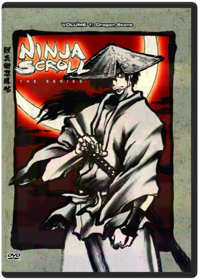 Artist Not ProvidedNinja Scroll: Volume 2: Dangerous Path Artist Not ProvidedEpisode 5 "Diamond Child" Meet Tatsunosuke, a young thief with a special gift and nothing to lose. Matched against Tsubute, which thief will come out with the Dragon Stone in his pocket? Faced with the opportunity to join the Kimon, will Tatsunosuke take the chance, and pay for it with his life? Episode 6 "Shelter From the Rain" Apart from the others, Jubei finds himself poisoned in battle with Nenmu, a ninja who can use the bodies of people. Caught in a rainstorm, with the help of a woman and her young son, Jubei slowly recuperates from the poison. But with Nenmu’s ability to manipulate anybody, who can tell a friend from the enemy? Will Jubei’s newfound allies turn against him? Episode 7 "Blossom" Azami is back, and after the half of Dragon Stone she could not get the first time, determined not to lose it to the Kimon clan. Meanwhile, Jubei learns the truth about the Dragon Stone and the treasure of the Lost Dynasty, and he’s slowly figuring out just how precarious of a position they are all in. Episode 8 "The Fate of Rengoku" Rengoku has her mission – to get the other half of the Dragon Stone from Jubei. This is also her chance to avenge the death of her beloved brother, but at what cost? With revenge on her mind, what will Rengoku sacrifice for the ability to kill Jubei?Ninja Scroll: Volume 3: Deliverance Artist Not ProvidedThe war between the clans reaches its climax as Shigure is kidnapped by the Kimon clan, leaving both the Hiruko and Jubei desperately chasing after them. As the powers of the Light Maiden grow stronger, friends and enemies become harder to tell apart andO Brother, Where Art Thou? 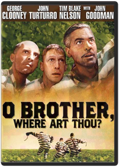 Joel Coen, Roger DeakinsDisenchanted with the daily drudge of crushing rocks on a prison farm in Mississippi, the dapper, silver-tongued Ulysses Everett McGill (George Clooney, THE PERFECT STORM) busts loose. Except he's still shackled to his own chain-mates from the chain gang — bad-tempered Pete (John Turturro, SUMMER OF SAM), and sweet, dimwitted Delmar (Tim Blake Nelson, HAMLET). With nothing to lose and buried loot to regain — before it's lost forever in a flood — the three embark on the adventure of a lifetime in this hilarious offbeat road picture. Populated with strange characters, including a blind prophet, sexy sirens, and a one-eyed Bible salesman (John Goodman, COYOTE UGLY), it's an odyssey filled with chases, close calls, near misses, and betrayal that will leave you laughing at every outrageous and surprising twist and turn.Oliver Stone Collection Charles Kiselyak, Oliver StoneThe Oliver Stone Collection 10-Movie Giftset includes Extra Special Features on most Titles: Any Given Sunday Special Edition Director's Cut (2 discs):Behind-the-scenes DocumentaryFull Contact: The Making of Any Given Sunday2 Feature-Length Audio Commentaries by Oliver Stone and Jamie FoxOver a Dozen Deleted/Extended Scenes3 Music Vides Featuring Jamie Foxx and LL Cool J Jamie Foxx Audition Tape and Screen Tests Instant Replay Feature Allowing Direct Access to Game Action Scenes Gag Reel, Football Outtake Montage and Much More Also Includes Enhanced Features for DVD-Rom. JFK Special Edition Director's Cut (2 discs):17 Minutes of Footage Not Seen in North American TheatersNew Digital Transfer in Remixed Dolby 5.1 SurroundReissued in Dual-Layer Format Allowing Uninterrupted PlaybackFeature-Length Audio Commentary by StoneDeleted/Extended ScenesInterview with Fletcher ProutyVisual CommentaryMultimedia EssayAlso Includes Enhanced Features for DVD-Rom. The Doors (2 discs):Expanded Double-Disc EditionDocumentary The Road of ExcessDirector CommentaryFeaturetteAdditional Scenes. Natural Born Killers:New Digital Transfer in Remixed Dolby 5.1 SurroundDocumentary Chaos Rising: The Storm Around Natural Born KillersFeature-Length Audio Commentary by StoneDeleted Scenes and Alternate EndingOriginal Theatrical Trailer. Wall Street: Director CommentaryCharlie Rose Interview. Heaven and Earth: New Digital Transfer in Remixed Dolby 5.1 SurroundFeature-Length Audio Commentary by StoneDeleted ScenesOriginal Theatrical Trailer. Nixon: (2 discs) Expanded Double-Disc Edition with Deleted Scenes Reinserted into the FeatureDirector Commentary. Talk Radio: ProdPearl Jam: Touring Band 2000 Steve GordonThe first Pearl Jam full-length DVD features three hours of live and montage footage from the band's 2000 U.S. and European tours. The main body of the DVD program is comprised of 28 full song performances filmed in various cities on the band's 2000 48-city U.S. tour, reflecting the time and composition of an actual concert set list. The DVD was filmed by Pearl Jam crew members Liz Burns, Steve Gordon, and Kevin Shuss without directors or producers. An additional 50 minutes of special bonus features includes footage from the band's 2000 European tour, backstage footage, previously unreleased music, special consumer-chosen camera angles, the previously unreleased video for "Oceans," and more. Edited by Steve Gordon. Recorded and mixed by Brett Eliason and engineered by John Burton.
Track list: Long Road, Corduroy, Grievance, Animal, Gods' Dice, Evacuation, Given to Fly, Dissident, Nothing as It Seems, Evenflow, Lukin, Not for You, Daughter (into "It's OK" by Dead Moon), Untitled, MFC, Thin Air, Leatherman, Betterman, Nothingman, Insignificance, I Got Shit, RVM, Wishlist, Jeremy, Evolution, Don't Go, Parting Ways, Rocking in the Free World
Special bonus features:
Stationary "Matt-cam" footage is available with a heavier percussion mix for two of the songs featured on the main body of the DVD: "Evacuation" and "Even Flow" and also for "In My Tree." (The "Matt-cam" is a special camera positioned behind drummer Matt Cameron that the consumer can switch to while viewing the DVD.)
European montages: City, band, and fan montages from the European tour with "Yellow Ledbetter" live and previously unreleased instrumentals recorded by Pearl Jam during early Binaural sessions. Instrumentals titled: "Thunderclap," "Foldback," and "Harmony."
Outtakes of band on U.S. tour, set to the song "Smile"
"Do the Evolution" video—animated by Todd McFarlane
"Oceans" video—never before released in the U.S. directed by Josh TaftPecker John WatersEdward Furlong, Christina Ricci. In this offbeat John Waters comedy, a young Baltimore photographer gains sudden fame after a minor photo exhibition. 1998/color/87 min/R.Pee-wee's Playhouse #1 Paul Reubens, Bill Freiberger, Guy J. Louthan, Stephen R. Johnson, Wayne OrrPaul Reubens, Laurence Fishburne, Phil Hartman. The madcap adventures of Pee Wee's Playhouse charmed a generation of kids with its incredibly inventive and hilarious characters, including Miss Yvonne, Cowboy Curtis, Reba the Mail Lady, Captain Carl, the King of Cartoons and so many more. Includes all 23 episodes from the first two seasons on 5 DVDs. 1986-87/color/9 hrs/NR/fullscreen.Pee-wee's Playhouse #2 Bill FreibergerNow you can see Miss Yvonne, Cowboy Curtis, Jambi the Genie, Reba the Mail Lady, Captain Carl, Tito, the King of Cartoons and the rest of the gang for the first time ever on DVD! Join the fun and scream the secret word to every great episode! It's side-splitting hilarity in never-before-seen clarity! Hey, that rhymes! Get 'em while they're hot if you wanna be cool! Winner of an amazing 22 Emmy« Awards! During its six-year run, this show has enchanted millions of children and adults alike! Starring Paul Reubens, Larry Fishburne, S. Epatha Merkerson, Lynne Stewart. VOL. 2 EPISODES: Pajama Party, I Remember Curtis, Reba Eats and Pterri Runs, Conky's Breakdown, To Tell the Tooth, Mystery, Dr. Pee-wee and the Del Rubios, Front Page Pee-wee, Fire in the Playhouse, Tango Time, Love That Story, Playhouse Day, Sick, Did Someone Say Sick?, Accidental Playhouse, Miss Yvonne's Visit, Fun, Fun, Fun, Rebarella, Camping Out, Heat Wave, Something to Do, Chairry Tee Drive, Playhouse for Sale, Let's Play Office Includes 6 Never-Before-Seen Lost Episodes!Pee Wee's Playhouse Christmas Special Wayne OrrJoin the whole Playhouse gang for one of the wackiest Christmas specials ever with laughs for the whole family and all the imagination and charm of Saturday morning's most outrageous TV series, which became a cultural milestone when it aired from 1986 to 1991. In this unique triple Emmy« nominated Christmas special, Pee-wee gets into the spirit of the season with lots of singing, dancing and other holiday fun with his Playhouse pals and more than a dozen celebrity guest stars as you've never seen them before. Everything's going great, except Pee-wee's Christmas wish list is so long that there won't be enough presents for all the other kids in the world if he gets everything he wants! When Santa Claus pleads for help, Pee-wee reluctantly gets a lesson in the true meaning of Christmas. Cast includes: Cowboy Curtis (Laurence Fishburne), Reba the Mail Lady (S. Epatha Merkerson), and Miss Yvonne (Lynne Stewart). Guest stars include: Frankie Avalon, Whoopi Goldberg, Joan Rivers, Charo, Del Rubio Triplets, Annette Funicello, Magic Johnson, Dinah Shore, Grace Jones, Oprah Winfrey, k.d. lang, Little Richard, Zsa Zsa Gabor.A Perfect Circle: Lost in the Bermuda Triangle DVD features never before seen footage from the Bakini Bandits and A Perfect Circle. It's the companion visual to A Perfect Circle's hit "The Outsider."
Total time: 24 minutesPeter Pan 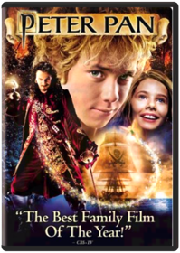 P.J. HoganThe magic, the excitement, the wonder of the true Peter Pan comes to life for the first time in this spellbinding fantasy that critics proclaim "a fun and fantastic tale!" (Daily Herald). Brimming with spectacular special effects and non-stop action, this all-new adventure is sure to be a family favorite for years to come! "One of the finest films of the year!" (Daily Gazette)Planet of the Apes: The Complete TV Series After their spacecraft travels through a time warp, two astronauts (Ron Harper, James Naughton) from 1981 crash-land back on Earth in the year 3085 - a time when intelligent apes rule and humans have been reduced to servants or pets. Captured by the apes and sentenced to death, they are saved by a curious chimpanzee name Galen (Roddy McDowall). But now all three are on the run, trying to keep one step ahead of the gorilla army led by General Urko (Mark Lenard), who is determined to kill the renegades.Poltergeist Tobe HooperThis awesome supernatural thriller stars Craig T. Nelson and JoBeth Williams as a California couple swept up in a wave of horror after sinister spirits invade their home and kidnap their child. Year: 1982 Director: Tobe Hooper Starring: Craig T. Nelson, Jo Beth Williams, Beatrice StraightPrecious Lee DanielsPrecious Jones, an inner-city high school girl, is illiterate, overweight, and pregnant…again. Naïve and abused, Precious responds to a glimmer of hope when a door is opened by an alternative-school teacher. She is faced with the choice to follow opportunity and test her own boundaries. Prepare for shock, revelation and celebration.Princess Mononoke Hayao MiyazakiAs of 2001, PRINCESS MONONOKE is one of only two films to ever break $150 million at the Japanese box office — the other is TITANIC.Quantum Leap: The Complete First Season Aaron Lipstadt, Alan J. Levi, David Hemmings, Gilbert M. Shilton, Ivan DixonTheorizing that one could time travel within his own lifetime, Dr. Sam Beckett stepped into the Quantum Leap accelerator and Vanished...He woke to find himself trapped in the past, facing mirror images that were not his own and driven by an unknown force to change history for the better. His only guide on this journey is Al, an observer from his own time, who appears in the form of a hologram that only Sam can see and hear. And so Dr. Beckett finds himself leaping from life to life, striving to put right what once went wrong and hoping each time that his next leap will be the leap home.Quantum Leap: The Complete Second Season Aaron Lipstadt, Alan J. Levi, Andy Cadiff, Christopher T. Welch, David G. PhinneyAll 22 episodes from season two—including "Honeymoon Express," "What Price Gloria?," "Thou Shalt Not...," "Jimmy," and "M.I.A."—are collected in a three-disc set. 17 1/2 hrs. total. Standard; Soundtrack: English Dolby Digital stereo; Subtitles: French, Spanish. **22 episodes on 3 discs. 17 1/2 hrs.**Quantum Leap: The Complete Third Season Andy Cadiff, Chris Ruppenthal, Christopher T. Welch, Debbie Allen, James Whitmore Jr.All 22 episodes from season three—including the two-part "The Leap Home," "Miss Deep South," "Rebel Without a Clue," "Runaway," and "Last Dance Before an Execution"—are collected in a three-disc set. 17 hrs. total. Standard; Soundtrack: English Dolby Digital stereo; Subtitles: French, Spanish. **22 episodes on 3 discs. 17 hrs.**Quantum Leap: The Complete Fourth Season Anita W. Addison, Bob Hulme, Christopher Hibler, Eric Laneuville, James Whitmore Jr.Take a trip through time with the daring Dr. Sam Beckett (Scott Bakula) and his hilarious hologram guide, Al (Dean Stockwell), in all 22 extraordinary, groundbreaking episodes of Quantum Leap: The Complete Fourth Season. It’s adventure like you’ve never seen, with each amazing episode from this eight-time Emmy-nominated season now digitally remastered for incredible picture quality. Journey back as Sam and Al survive a hurricane, trail a murderer, make a monkey out of themselves and even switch roles! With each "leap" into another identity, Sam hopes to find some insight into the jump that will finally take him home. And now, fans can spend more time with Sam and Al with an exclusive bonus episode from the Fifth Season. You won’t want to miss a minute of the adventure!Red Dragon Studio: Uni Dist Corp. (mca) Release Date: 01/09/2007 Run time: 124 minutes Rating: RThe Ren & Stimpy Show: The First and Second Seasons John Kricfalusi, Bob Camp, Bong Hee Han, Chris Reccardi, Gregg VanzoJoin Ren and Stimpy in their bizarre and gross world that features the oddly lovable duo in some outlandish situations coupled with hilarious jokes. Ren and Stimpy features the guest voice of music star Frank Zappa and consist of amusing episodes combined with the gross-out humor that became popular when the show first premiered on Nickelodeon in 1991.The Ren & Stimpy Show: Seasons Three and a Half-ish Bob Camp, Bill Wray, Chris Reccardi, Howard E. Baker, Jim GomezDid you REALLY think you were safe from the insanity and stupidity of Ren and Stimpy? Well, the demented duo is back for more madness with their friends Powdered Toastman, Jimmy Lummox, Jerry the Bellybutton Elf, crazy Wilbur Cobb, deranged circus midgets, and more! From girl scouts to brain surgery, from prehistoric times to Washington, D.C., from inside Stimpy Bellybutton, to inside Ren's face, get ready for a whacked-out ride! Oh, joy of joys!The Ren & Stimpy Show: Season Five and Some More of Four Bob Camp, Arthur Filloy, Bill Wray, Chris Reccardi, Craig BartlettJoin Ren and Stimpy in their bizarre and gross world that features the oddly lovable duo in some outlandish situations coupled with hilarious jokes. THE REN AND STIMPY SHOW: SEASONS FIVE & SOME MORE OF FOUR consists of amusing episodes combined with the gross-out humor that became popular when the show first premiered on Nickelodeon in 1991Ren & Stimpy: The Lost Episodes Vincent WallerAfter a ten year hiatus, John K. resurrected his classic cartoon for Spike TV – no holds barred. Witness the cartoons he always wanted to make, uncensored and out of control. Deemed too hot to handle by Spike execs, these episodes are now available on DVD – be warned: this is not your baby-brother’s Ren & Stimpy!Reservoir Dogs Quentin TarantinoGas can box with dvd and bonus features insideReturn of the Living Dead: Necropolis A group of high school kids discovers that a megacorporation has been conducting experiments on humans, using a mutated chemical compound that reanimates the dead. Extras include trailers and more.Robot Chicken: Season 1 Seth Green, Douglas Goldstein, Matthew Senreich, Tom RootOld-school stop-motion animation and fast-paced satire are the hallmarks of this eclectic show created by Seth Green and Matt Senreich. Action figures find new life as players in frenetic sketch-comedy vignettes that skewer TV, movies, music and celebrity. It's television especially formulated for the Attention Deficit Disorder generation.
DVD Features:
Audio Commentary
Audio Commentary:On all episodes by creators Seth Green and Matt Senreich.
Comparison Scenes:FX/Wire to Animation Comparisons & Animatic to Episode Comparisons
Deleted Scenes:Includes deleted animatics and scenes from 4 episodes.
Featurette:Behind the scenes of Robot Chicken with the cast and crew.
Gag Reel:Pee Gag Reel.
Other:See the Animation Meetings for three episodes.
Outtakes:Includes alternate audio takes from cast and guest stars.
Photo galleryRobot Chicken: Star Wars Seth GreenA long time ago, in a galaxy far, far away...no one was laughing at "Star Wars." Now, "Robot Chicken" mastermind Seth Green directs this affectionate animated spoof of the six-chapter space opera, in which Luke Skywalker (voiced by Mark Hamill) loses track of his own backstory, Darth Vader laments the Death Star's destruction by the "Aluminum Falcon," and more. Also stars the voices of Ahmed Best, Donald Faison, and George Lucas. 23 min. Standard; Soundtrack: English Dolby Digital stereo; Subtitles: English, French, Spanish; featurettes; audio commentary; deleted scenes; photo gallery; behind-the-scenes footage; more.The Royal Tenenbaums 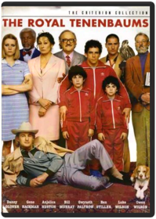 Wes AndersonGene Hackman, Gwyneth Paltrow, Ben Stiller. The hilarious misadventures of a misanthropic patriarch and his brilliant but detached family. Directed by Wes Anderson. 2001/color/109 min/R.Rushmore Wes Anderson's dazzling sophomore effort is equal parts coming-of-age story, French New Wave homage, and screwball comedy. Tenth grader Max Fischer (Jason Schwartzman) is Rushmore Academy's most extracurricular student-and its least scholarly. He faces expulsion, and enters into unlikely friendships with both a lovely first-grade teacher (Olivia Williams) and a melancholy self-made millionaire (Bill Murray, in an award-winning performance). Set to a soundtrack of classic British Invasion tunes, Rushmore defies categorization even as it captures the pain and exuberance of adolescence with wit, emotional depth, and cinematic panache. Criterion is proud to present one of 1998's most acclaimed films in a Director Approved special edition.Saving Private Ryan Steven SpielbergSteven Spielberg's WWII epic is a stunning experience, telling the emotional story of an Army captain who, after facing the horrors of Omaha Beach on D-Day, receives orders to lead his troops on a search for a lost paratrooper whose three brothers were killed in combat. Tom Hanks stars as the no-nonsense captain; Edward Burns, Tom Sizemore and Giovanni Ribisi members of his platoon; and Matt Damon is Private Ryan. 169 min. Widescreen (Enhanced); Soundtrack: English Dolby Digital 5.1; "making of" documentary; biographies; theatrical trailers.Seinfeld: Seasons 1 & 2 Tom CheronesSeinfeld has never looked this good! All 18 episodes from the first two seasons have been remastered in high definition for the best possible picture and sound quality. Including 2 versions of the pilot episode and approximately 13 hours of exclusive special features from the creative talents behind the show, this DVD is a must own!Seinfeld: Season 3 Jason Alexander, David Steinberg, Joshua White, Tom CheronesRelive your favorite Seinfeld moments like never before in this 4-disc set with all 22 episodes from the third season remastered in high definition for the best possible picture and sound quality! With approximately 13 hours of exclusive special features from the creative talents behind the show, this DVD is a must own!Seinfeld: Season 4 Tom CheronesRelive your favorite Seinfeld moments like never before in this 4-disc set with all 24 episodes from the fourth season remastered in high definition for the best possible picture and sound quality! With approximately 13 hours of exclusive special features from the creative talents behind the show, this DVD is a must own!
The episodes included in Season 4 are:
41. The Trip (1)
42. The Trip (2)
43. The Pitch
44. The Ticket
45. The Wallet (1)
46. The Watch (2)
47. The Bubble Boy
48. The Cheever Letters
49. The Opera
50. The Virgin
51. The Contest
52. The Airport
53. The Pick
54. The Movie
55. The Visa
56. The Shoes
57. The Outing
58. The Old Man
59. The Implant
60. The Junior Mint
61. The Smelly Car
62. The Handicap Spot
63. The Pilot (1)
64. The Pilot (2)Seinfeld: Season 5 Tom Cherones1. The Mango
What kind of fruit does Kramer attempt to return to Joe's Fruit Stand?
a) Plum
b) Mango
c) Peach
d) Kiwi
2. The Puffy Shirt
What does George's father wear in the pool?
a) Swim cap
b) Sneakers
c) Flip Flops
d) T-shirt
3. The Sniffing Accountant
Which grammatical element causes Elaine to break up with Jake Jarmel?
a) Split infinitive
b) Capitalization
c) Exclamation point
d) Question mark
4. The Bris
Who does Jerry enjoy mimicking in The Bris?
a) Marlon Brando from The Godfather
b) Al Pacino from Scent of a Woman
c) Robert De Niro from Taxi Driver
d) Sylvester Stallone from Rocky
5. The Barber
What movie calms Jerry's barber Enzo during his fit of rage?
a) Edward Scissorhands
b) Shampoo
c) The Barber of Seville
d) Hairspray
Answers:
1. Peach
2. Sneakers
3. Exclamation point
4. Marlon Brand from The Godfather
5. Edward Scissorhands
Ready to buy? Sign in to turn on 1-Click ordering. a9.com Instant Reward Active. You Save 1.57% Tell a Friend Seinfeld - Season 5 (1990) Starring: Jerry Seinfeld, Julia Louis-Dreyfus Director: Andy Ackerman, Jason Alexander Rating: Seinfeld - Season 5 See larger image List Price: $49.95 Price: $32.47 and this item ships for FREE with Super Saver Shipping. See details You Save: $17.48 (35%) Availability: This title will be released on November 22, 2005. You may order it now and we will ship it to you when it arrives. Ships from and sold by Amazon.com. See more on holiday shipping. Edition: View highlights from Seinfeld: Seasons 5 & 6 and vote for your favorite scenes here. Other Versions (DVD) List Price Price Other Offers: DVD Seinfeld - Seasons 1 & 2 $49.95 $29.97 117 used & new from $19.99 DVD Seinfeld - Season 3 $49.95 $29.97 116 used & new from $21.00 DVD Seinfeld - Season 6 $49.95 $32.47 DVD Seinfeld - Season 4 $49.95 $29.97 97 used & new from $26.50 DVD Seinfeld - Seasons 5 & 6 Giftset (Includes Handwritten Script and Collectible Puffy Shirt) $119.95 $77.97 Better Together Buy this DVD with Seinfeld - Season 6 DVD ~ Jerry Seinfeld today! Total List Price: $99.90 Buy Together Today: $64.94 Customers who bought this DVD also bought * Seinfeld - Season 6 DVD ~ Jerry Seinfeld * Seinfeld - Season 4 DVD ~ Jerry Seinfeld * Seinfeld - Season 3 DVD ~ Jerry Seinfeld * Seinfeld - Seasons 1 & 2 DVD ~ Jerry Seinfeld * Friends - The Complete Tenth Season DVD ~ Lisa Kudrow * Star Wars, Episode III - Revenge of the Sith (Widescreen Edition) DVD ~ George Lucas Explore Similar Items: in DVD, in Books, and in Music Storyline Genres: Comedy Plot Outline: The continuing misadventures of neurotic New York stand-up comedian Jerry Seinfeld and his equally neurotic New York friends. Plot Synopsis: Jerry Seinfeld stars in this television comedy series as himself, a comedian. The premise of this sitcom is Jerry and his friends going through everyday life, discussing various quirky situations that we can all relate to (especially if we live in New York). The eccentric personalities of the offbeat characters who make up Jerry's social circle contribute to the fun. Plot Keywords: Title Spoken By Character | Stand Up Comedy | Eccentric | Ensemble Cast | Friend | Product Placement | New York Yankees | New York | Single | Sitcom | Apartment | Baseball | (Show all 21 plot keywords recommended by customers) Product Details * Actors: Jerry Seinfeld, Julia Louis-Dreyfus, Michael Richards, Jason Alexander, See more * Directors: Andy Ackerman, Jason Alexander * Format: Color, Box set, Dolby * Aspect Ratio: 1.33:1 * Number of discs: 4 * Rated: * Studio: Columbia Tristar Home Video * DVD Release Date: November 22, 2005 * Run Time: 498 minutes * Average Customer Review: Based on 15 Reviews * DVD Features: o Available Subtitles: English, Spanish, French, Portuguese o Available Audio Tracks: English (Dolby Digital 2.0 Stereo), French (Dolby Digital 2.0 Mono) o Featurette: Jason + Larry = George o Deleted Scenes: In the Vault o Inside Looks o Commentaries: Yada, Yada, Yada o Notes About Nothing o NBC Promos and TV Spots: Sponsored by Vandelay Industries o Exclusive Stand-Up Material: Master of His Domain o Bloopers: Not That There's Anything Wrong With That * Note on DVD sets: During shipping, discs in multidisc sets occasionally become dislodged without damage. Please examine and play these discs. If you are not completely satisfied, we'll refund or replace your purchase. * From IMDb: Quotes & Trivia * ASIN: B000BBOUEU * Amazon.com Sales Rank: #12 in DVD This is item 4 in The Seinfeld Series. Theatrical Release Information US Theatrical Release Date: May 31, 1990 MPAA: Production Company: Castle Rock Entertainment, West-Shapiro Filming Locations: Los Angeles, California, USA| New York City, New York, USA| Ren-Mar Studios - 846 N. Cahuenga Blvd., Hollywood, Los Angeles, California, USA Editorial Reviews Seinfeld: Season 5 Trivia 1. The Mango What kind of fruit does Kramer attempt to return to Joe's Fruit Stand? a) Plum b) Mango c) Peach d) Kiwi 2. The Puffy Shirt What does George's father wear in the pool? a) Swim cap b) Sneakers c) Flip Flops d) T-shirt 3. The Sniffing Accountant Which grammatical element causes Elaine to break up with Jake Jarmel? a) Split infinitive b) Capitalization c) Exclamation point d) Question mark 4. The Bris Who does Jerry enjoy mimicking in The Bris? a) Marlon Brando from The Godfather b) Al Pacino from Scent of a Woman c) Robert De Niro from Taxi Driver d) Sylvester Stallone from Rocky 5. The Barber What movie calms Jerry's barber Enzo during his fit of rage? a) Edward Scissorhands b) Shampoo c) The Barber of Seville d) Hairspray Answers: 1. Peach 2. Sneakers 3. Exclamation point 4. Marlon Brand from The Godfather 5. Edward Scissorhands
Product Description:
DISC 1 THE MANGO- Jerry learns Elaine faked orgasms with him and pleads for another chance. Kramer's banned from his local fruit stand and George discovers the sexual power of mango. THE GLASSES-George loses his glasses and thinks he sees Jerry's girlfriend with his cousin. A strange dog bites Elaine and Kramer helps Jerry buy a powerful air conditioner. THE PUFFY SHIRT-During dinner with Kramer's low-talking girlfriend, Jerry unwittingly agrees to wear a puffy pirate shirt for his upcoming "The Today Show" appearance. THE SNIFFING ACCOUNTANT-Jerry thinks his accountant is a drug addict. Jerry, Kramer and Newman plot a stakeout. George plans another career change: bra salesman. THE BRIS-Jerry and Elaine agree to be godparents to their friends' newborn boy. They find a shaky mohel to perform the bris. Kramer is convinced he saw a pigman at the hospital. DISC 2 THE LIP READER-George tries to get Jerry's deaf girlfriend to read lips at a party. Kramer becomes a ball boy at the U.S. Open. THE NON-FAT YOGURT-Jerry and Elaine try to confirm that their favorite frozen yogurt is non-fat. Their research causes a stir during the NYC mayoral election. Elaine dates George's boyhood nemesis. Now, for the first time, see two versions of this episode! THE BARBER-Jerry frets over leaving his incompetent barber. Elaine enlists Kramer to participate in a bachelor auction. THE MASSEUSE-Jerry's masseuse girlfriend won't give him a massage. Elaine dates Joel Rifkin - not the mass murderer. THE CIGAR STORE INDIAN-Jerry offends Elaine's friend with a cigar store Indian. Kramer sells his coffee table book idea to Elaine's boss. DISC 3 THE CONVERSION-George converts to the Latvian Orthodox religion for a girl. Jerry spots a suspicious ointment in his girlfriend's medicine cabinet. THE STALL-Elaine agonizes over a woman's refusal to pass toilet paper under the stall of a public restroom. Kramer convinces Jerry that his girlfriend makes a living as a phone sex operator. George befriends Elaine's "mimbo" boyfriend. THE MARINE BIOLOGIST-George starts dating an old classmate when Jerry tells her that George is a successful marine biologist. Elaine's electronic organizer injures a passerby when her Russian novelist client launches it from their limo. Kramer golfs on the beach. THE DINNER PARTY-En route to a dinner party, Elaine and Jerry pair off to buy a babka. George's jacket gets in the way at the liquor store where he and Kramer look for a bottle of wine. THE PIE-Jerry meets his girlfriend's father and loses his appetite. Elaine discovers that a mannequin resembling her has been showing up in window displays. George plots to buy a suit on sale. Kramer dates a Monk's cashier. THE STAND-IN-Kramer is hired as a stand-in on a soap opera. He encourages Mickey to put lifts in his shoes, but his advice doesn't sit well with the other little people. George is ready to break up with his girlfriend until he discovers that she's being urged to call it quits with him. DISC 4 THE WIFE-Jerry lets his girlfriend pose as his wife so that she can receive his dry-cleaning discount, but the scam backfires when his family learns of his "marriage." Elaine's health club boyfriend wants to turn George in for peeing in the shower. THE FIRE-George panics during a fire at his girlfriend's son's birthday party and bolts for an escape route. Kramer saves Elaine's co-worker's pinky toe. THE RAINCOATS (PARTS 1 & 2)-Elaine dates a "close talker" who loves spending time with Jerry's parents. Jerry is caught making out during Schindler's List. Morty and Kramer go into business together. THE HAMPTONS-A weekend getaway to the Hamptons spins out of control when Jerry's girlfriend sees George, a victim of "shrinkage," naked. THE OPPOSITE-George decides to do the opposite of his instincts and everything falls into place, even a job with the Yankees. Meanwhile, Elaine loses her boyfriend and her job, but Jerry remains "even Steven."Seinfeld: Season 6 Andy Ackerman1. The Chaperone
What fabric does George suggest the Yankees use for their uniforms?
a) Rayon
b) Lycra-Spandex
c) Nylon
d) Cotton
2. The Big Salad
Who does Elaine describe as "an enigma, a mystery wrapped in a riddle"?
a) Frank Costanza
b) Newman
c) Kramer
d) Mr. Pitt
3. The Pledge Drive
What does Mr. Pitt eat with a knife and fork?
a) Granola bar
b) Snickers bar
c) Baby Ruth bar
d) Oreos
4. The Chinese Woman
What unusual article of clothing does Frank Costanza’s lawyer wear?
a) A cape
b) An army uniform
c) A kimono
d) A kilt
5. The Gymnast
What is forbidden in Mr. Pitt’s office?
a) Ink
b) Perfume
c) Smoking
d) Music
Answers:
1. Cotton
2. Newman
3. Snickers Bar
4. A Cape
5. Ink
Product Description:
DISC ONE THE CHAPERONE-When Jerry dates a beauty contestant, Kramer wants to chaperone. Mr. Pitt hires Elaine. George encourages the Yankees to make cotton jerseys. THE BIG SALAD-George has issues when his girlfriend takes credit for buying Elaine a salad. Jerry is disturbed that his girlfriend was Newman's ex. Kramer gets involved in a slow-speed chase with a suspected murderer. THE PLEDGE DRIVE-Elaine sees Mr. Pitt eating a candy bar with a knife and fork, starting a trend. George thinks everyone's giving him the finger. Jerry hosts a PBS pledge drive. THE CHINESE WOMAN-George's phone lines get crossed with Donna Chang's and Jerry dates her - but she's not Chinese. THE COUCH-Elaine dates a hunky moving man. Kramer and Poppie go into the pizza business. George tries to rent Breakfast at Tiffany's instead of reading it to impress his girlfriend. Poppie pees on Jerry's couch. THE GYMNAST-Jerry dates a Romanian gymnast. Elaine tries to tear Mr. Pitt from a 3-D poster. George's girlfriend's mother catches him eating from the trash. DISC TWO THE MOM & POP STORE-George thinks he bought Jon Voight's car. Kramer tries to save a store. Jerry crashes a party to watch the Macy's parade. THE SOUP-Kenny Bania offers Jerry a suit in exchange for a meal, but soup doesn't count. THE SECRETARY-Jerry sees his dry cleaner wearing his jacket. George's secretary out-earns him. Kramer gets Uma Thurman's phone number. Elaine finds that Barneys uses skinny mirrors. THE SWITCH-Jerry tries to pull the roommate switch. George dates a bulimic. Elaine agonizes over Mr. Pitt's busted racket. Kramer's first name is revealed and we meet his mother. THE RACE-Superman fan Jerry dates a woman named Lois, whose boss is his high-school nemesis. Elaine dates a Communist; now George wants to. Kramer works as a Santa with Mickey as his elf. Jerry races his nemesis again to settle their score. THE LABEL MAKER-Elaine and Jerry find that Tim Whatley "re-gifted" a label maker. Kramer and Newman play Risk. George is threatened by his girlfriend's male roommate. Everyone has Super Bowl fever and Jerry's sick over who joins him at the game. DISC 3 THE SCOFFLAW-George learns the truth about a friend's illness. Kramer brings in a notorious scofflaw. THE HIGHLIGHTS OF 100 (PARTS 1&2)-An hour-long look at highlights from the first 100 episodes. THE BEARD-Elaine poses as a beard for a gay man and tries to convert him. George wears a toupee and turns down a bald woman. Kramer makes money posing in police lineups. Jerry takes a lie detector test to prove he's not a fan of "Melrose Place." THE KISS HELLO-Elaine's friend loves to "kiss hello" but Jerry hates it. Kramer adorns the apartment lobby with photos to encourage tenants to know their neighbors. THE DOORMAN-Mr. Pitt's doorman intimidates Jerry. Elaine and Jerry cover themselves when a couch is stolen from the lobby. Frank Costanza moves into George's apartment. Kramer and Frank make a bra for men but argue over the name. DISC FOUR THE JIMMY-George goes into business with a buddy who refers to himself in the third person. Jerry discovers his dentist keeps Penthouse in his waiting room. Kramer comes off as mentally challenged at a benefit. THE DOODLE-George is upset by his girlfriend's sketch of him. Jerry's flea-infested apartment forces his parents into Elaine's hotel. THE FUSILLI JERRY-Elaine's boyfriend uses one of Jerry's moves. Kramer mistakenly receives license plates that read "Assman." THE DIPLOMAT'S CLUB-Jerry's plan to meet a gorgeous model is derailed. George proves that he's not racist. Elaine plans to quit her job, until she realizes she's in her boss's will. THE FACE PAINTER-Puddy paints his face for a hockey game. George tells his girlfriend he loves her. THE UNDERSTUDY-Jerry and George are accused of injuring Bette Midler so Jerry's girlfriend can take the stage in their Broadway show. Elaine has Frank translate her manicurist's conversations. Elaine meets J. Peterman and lands herself a new job.Seinfeld: Season 7 SeinfeldNo soup for you! He stole my marble rye! Bosco! Spongeworthy? ...and nobody can forget - George gets engaged! Here's your invitation to 24 original full-length episodes of the Emmy-® award-winning Season 7 of SEINFELD. All remastered with new high-definition picture and sound. In addition there are 13 hours of exclusive never-before-seen special features from the creative talents behind the show including all new interviews with Jerry Seinfeld Larry David Julia Louis-Dreyfus Michael Richards and Jason Alexander!Seinfeld: Season 8 SeinfeldHere's your invitation to 22 original full-length network episodes of Season 8! Jerry Elaine George and Kramer return to DVD on June 5 with some of the funniest episodes: muffin tops Elaine dancing abstinence and of course yada yada. The deluxe four-disc boxed set is loaded with approximately 13 hours of exclusive special features including all-new interviews with Jerry Seinfeld Larry David Julia Louis-Dreyfus Michael Richards and Jason Alexander.Seinfeld: Season 9 SeinfeldSeinfeld: Season 9 is a four-disc boxed set including all 24 episodes from the ninth and final season of the long-running series including the finale and hours of exclusive never-before-seen bonus footage. The wealth of bonus features for Seinfeld: Season 9 include scenes from The Roundtable (excerpts from the one-hour table discussion) deleted scenes bloopers trivia interviews stand-up comedy footage and other behind-the-scenes bonus material. The ninth season was nominated for five Emmy Awards including Outstanding Comedy Series and features an astounding array of noteworthy episodes such as the unique backwards episode The Betrayal and the reemergence of a classic arcade game in The Frogger. The season culminates in the highly rated two-part finale which boasts an illustrious gathering of some of the show's most memorable guest stars including Larry Thomas (Soup Nazi) Wendel Meldrum (Low-Talker) Golden Globe(r) Award-winner Teri Hatcher TV journalist Geraldo Rivera and others.Seinfeld On DVD Exclusive Bonus DVD UnknThe Silence Of The Lambs Jonathan DemmeA psychopath nicknamed Buffalo Bill is murdering women across the Midwest. Believing it takes one to know one, the FBI sends Agent Clarice Starling (Foster) to interview a demented prisoner who may provide clues to the killer's actions. That prisoner is psychiatrist Dr. Hannibal Lecter (Hopkins), a brilliant, diabolical cannibal who agrees to help Starling only if she'll feed his morbid curiosity with details of her own complicated life. As their relationship develops, Starling is forced to confront not only her own hidden demons, but also an evil so powerful that she may not have the courage or strength to stop it!The Simpsons: The Complete First Season 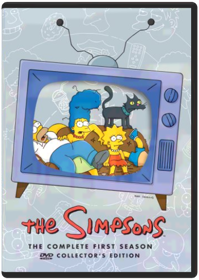 Studio: Tcfhe Release Date: 11/30/2007The Simpsons: The Complete Second Season Studio: Tcfhe Release Date: 11/30/2007The Simpsons: The Complete Third Season Alan Smart, Brad Bird, Carlos Baeza, David Silverman, Jeffrey LynchThe Simpsons: The Complete Fourth Season Carlos Baeza, David Silverman, Jeffrey Lynch, Jim Reardon, Mark KirklandWe are a used movie & video game store. All discs (come with DVD case & artwork) are in good condition. Discs will never have more than a few light scratches. If any problems, contact us within 7 days for replacement or refund! Purchase with confidence!The Simpsons: The Complete Fifth Season Bob Anderson, Carlos Baeza, David Silverman, Jeffrey Lynch, Jim ReardonThe entire fifth season of the animated television show, The Simpsons.
Genre: Television
Rating: NR
Release Date: 15-AUG-2006
Media Type: DVDThe Simpsons: The Complete Sixth Season 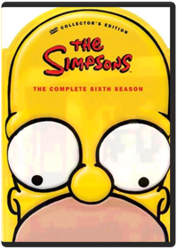 Bob Anderson, David Silverman, Jeffrey Lynch, Jim Reardon, Mark Kirkland"THE SIMPSONS" THE COMPLETE SIXTH SEASON DVD COLLECTION arrives on August 16, 2005 from Fox Home Entertainment. Showcasing all 25 episodes from the acclaimed sixth season, including Part One of the season cliffhanger "Who Shot Mr. Burns?,"The Simpsons: The Complete Seventh Season 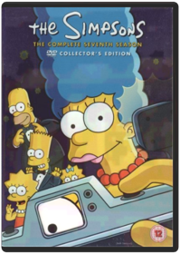 Season 7 of this beloved animated series includes the famous "Who Shot Mr. Burns?" episode and Tree House of Horror VI. Chock full of extras, this season is a tremendous asset to any DVD collectionThe Simpsons: The Complete Eighth Season Bob Anderson, Chuck Sheetz, Dominic Polcino, Jim Reardon, Mark KirklandThe madcap antics of Springfield’s first family continue when the Emmy® award-winning series created by Matt Groening returns to DVD. Arriving on August 15th from Fox Home Entertainment, "The Simpsons" The Complete Eighth Season showcases all 25 episodes from the critically-acclaimed eighth season, as well as a host of bonus materials including audio commentaries from Groening and "The Simpsons" Executive Producers, Writers and Directors, as well as animatics and storyboards with optional audio commentary, a special featurette, deleted scenes, a sketch gallery and much more. As a special bonus for fans and collectors, Fox Home Entertainment will release the "The Simpsons" The Complete Eighth Season in two unique packaging options - a special Limited Edition Maggie Simpson box, as well as a collectible, illustrated gatefold digipak.The Simpsons: Christmas 1 Tim Long, Rob OliverFive classic Simpson family holiday misadventures! Includes Simpsons Roasting on an Open Fire," Mr. Plow," Miracle on Evergreen Terrace," Grift of the Magi" and She of Little Faith." 2003/color/92 min/NR/fullscreen.The Simpsons: Christmas 2 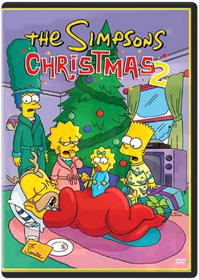 Tim Long, Rob OliverFeatures four Christmas-themed Simpsons episodes.The Simpsons: Treehouse of Horror Neil Affleck, Bob Anderson (VIII), Mikel B. Anderson, Wesley Archer, Carlos BaezaConsists of the following episodes: In this annual trilogy of terror, Homer attempts to kill his family in "The Shinning," Homer tries to fix a toaster and winds up altering the fabric of time itself in "Time and Punishment," and Principal Skinner serves students for lunch in "Nightmare Cafeteria." In this Halloween-themed anthology, advertising icons go berserk in "Attack of the 50 Foot Eyesores," Groundskeeper Willie invades the children's dreams in "Nightmare on Evergreen Terrace," and Homer enters a 3-D world of computer animation in "Homer 3." This Simpson showcase features a terrifying look at Bart's evil twin in "The Thing and I," Lisa creating a miniature world in "The Genesis Tub," and aliens stealing the identities of Bill Clinton and Bob Dole in "Mr. Kang Goes To Washington." In "Hex and the City," a gypsy curses Homer, bringing misery to everyone he loves. In "House of Whacks," a computer (Pierce Brosnan) takes over the Simpson house and attempts to kill Homer for Marge's love. And in "Wiz Kids," Bart and Lisa are students at a school for wizards, where they foil the evil Lord Montymort.Sin City Frank Miller (II), Robert RodriguezThis Recut & Extended Edition is the ultimate SIN CITY DVD Collection and features a new, never-before-seen extended version of the original motion picture, the original theatrical release with three new commentaries, and extensive brand-new bonus material! Also included, a complete SIN CITY graphic novel: "The Hard Goodbye." The acclaimed hit from director Robert Rodriguez delivers explosive stories straight from the pages of Frank Miller's hip series of "Sin City" graphic novels ... and stars Bruce Willis, Jessica Alba, Mickey Rourke, Jaime King, Clive Owen, Brittany Murphy, Rosario Dawson, Devon Aoki, Alexis Bledel, Benicio Del Toro, Elijah Wood, Nick Stahl, Michael Madsen, Carla Gugino, and Michael Clarke Duncan.The Sixth Sense M. Night ShyamalanHollywood superstar Bruce Willis (ARMAGEDDON, THE SIEGE) brings a powerful presence to an edge-of-your-seat thriller from writer-director M. Night Shyamalan (Oscar(R)-nominee for Best Original Screenplay and Best Director) that critics are calling one of the greatest ghost stories ever filmed. When Dr. Malcolm Crowe (Willis), a distinguished child psychologist, meets Cole Sear (Oscar(R)-nominee Haley Joel Osment, Best Supporting Actor), a frightened, confused, eight-year-old, Dr. Crowe is completely unprepared to face the truth of what haunts Cole. With a riveting intensity you'll find thoroughly chilling, the discovery of Cole's incredible sixth sense leads them to mysterious places with unforgettable consequences!The Sopranos: Season 1 On January 10th, 1999, America was introduced to two families that would make history: The Soprano family headed by Tony Soprano, and The Soprano "family" headed by ... Tony Soprano. ' 'Four Stars! The first gotta-watch, gotta love, Gotti-like TV series of 1999. Across the board it's an A-plus.' ' - The New York Post ' 'Achieves a fresh tone to match its irresistibly winning concept.' ' - The New York TimesThe Sopranos: Season 2 Allen Coulter Tim Van PattenFor Tony Soprano, there's no such thing as business as usual. Balancing the demands of his immediate family - wife Carmel, daughter Meadow and son Anthony Jr. - witht the demands of his other family - Paulie Walnuts, Silvio Dante and Big Pussy Bompensiero - means walking a tightrope no self-respecting mobster should have to walk. With his mother and uncle plotting against him, his older sister Janice wreaking her own special kind of havoc, and the very real threat that one of his closest allies is wired by the F.B.I, Tony needs the support of his psychiatrist Dr. Melfi more than ever.
DVD Features:
Audio Commentary
Biographies
Featurette
Filmographies
Other
Scene Access
TV SpotThe Sopranos: Season 3 Allen Coulter Tim Van PattenSome suburban households have two cars. Some have two houses. But Tony Soprano has two families. This could be why the FBI is going to such lengths to wiretap his home. Why the son of his dear late friend Jackie Aprile is causing him such agita. Why a Russian housekeeper is searching for her missing leg. Why his son is vandalizing school property and his daughter is getting her heart broken. Why his wife Carmela is both consulting a psychiatrist and confessing to a priest. And it's also why Tony Soprano is still seeing Dr. Melfi for his anxiety attacks. It isn't easy heading-up the mob in New Jersey. But that's what puts dinner on the table for the two families of Tony Soprano.
DVD Features:
Audio Commentary
Biographies
Featurette
Interactive Menus
Other
Scene AccessSouth Park: The Complete First Season Trey ParkerMr. Hankey! Mecha Streisand! Cartman's Mom! And more. It all started here, in South Park's groundbreaking first season. Still going strong in its sixth season, South Park continues to be Comedy Central's highest rated and most recognized original series ever.South Park: The Complete Second Season 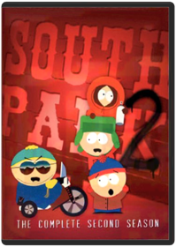 Trey Parker, Eric StoughAll eighteen episodes from the classic second season of Comedy Central's all-time highest rated series are now available to own in an exclusive 3-disc collector's edition DVD set with "kick-ass" special features.South Park: The Complete Third Season Trey Parker, Matt Stone, Eric StoughAll 17 episodes from season three—including "Rainforest Schmainforest," "Chinpokomon," "Starvin' Marvin in Space," "Mr. Hankey's Christmas Classics," and "Brown Noise"—are featured in a three-disc set. 6 1/4 hrs. total. Standard; Soundtracks: English Dolby Digital stereo, Spanish Dolby Digital mono, French Dolby Digital stereo; Subtitles: English, French, Spanish; audio commentary. **17 episodes on 3 discs. 6 1/4 hrs.**South Park: The Complete Fourth Season Trey Parker, Adrien Beard, Eric StoughAll 17 episodes from season four—including "The Tooth Fairy's TATS 2000," "Timmy! 2000," "Cartman Joins NAMBLA," "4th Grade," and "A Very Crappy Christmas"—are featured in a three-disc set. 6 1/3 hrs. total. Standard; Soundtrack: English Dolby Digital stereo; audio commentary. **17 episodes on 3 discs. 6 1/3 hrs.**South Park: The Complete Fifth Season Trey Parker, Eric StoughIn SOUTH PARK - THE COMPLETE FIFTH SEASON, join Stan, Kyle, = Cartman and Kenny as these four characters embark on the adventure of = growing up in a small mountain town. In the fifth season, the boys = discover a government secret, accidentally get sent to Afghanistan and = get into an extreme slugfest when 'Big Gay Al' returns, among many more = hilarious adventures. Episodes include: * It Hits the Fan * Cripple Fight * Super Best Friends * Scott Tenorman Must Die * Cartmanland * Full screen format; Dolby Digital English Stereo; closed-captioned for = the hearing-impairedSouth Park: The Complete Sixth Season Trey Parker, Eric Stough, Toni WurtsSit back and enjoy all 17 episodes of the sixth season of the show that makes you laugh your @$$ off, now available for the first time in this exclusive 3-disc collector’s edition. This season tackles such issues as child abduction, animal rights and early mammary development and its effects on society. Also, Cartman wears a dress on national television and Butters goes out of his mind. For them, it's all part of growing up in South Park.South Park: The Complete Seventh Season 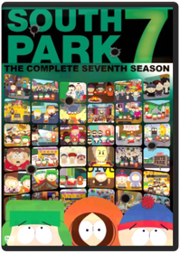 Trey ParkerAll fifteen episodes from South Park's hilarious seventh season are now available for the first time in this exclusive 3-disc collector's edition. Classic moments such as Cartman's attempt on Kyle's life, Jimmy and Timmy joining the "Crips" and the boys' experimentation with metrosexuality are all featured in Season Seven. So join Stan, Kyle, Cartman and Kenny for these and many more disturbing events. For them, it's just all part of growing up in South Park.South Park: The Complete Eighth Season Trey ParkerAll fourteen episodes from South Park’s out-of-control eighth season are now available for the first time in this exclusive 3-disc collector’s set. Stan, Kyle, Kenny and Cartman find themselves in the middle of hot-button political issues and celebrity shenanigans. Season eight is capped off with a very special Christmas episode done in the way only South Park does Christmas! For these four boys, it’s all part of growing up in South Park!South Park: The Complete Ninth Season Trey ParkerAll fourteen episodes from South Park’s infamous ninth season are now available for the first time in this exclusive 3-disc collector’s set. This season features Kenny’s epic battle between heaven and hell, uprising of redheads and adventures surrounding a certain closet. For these boys, it’s all part of growing up in South Park!South Park: The Complete Tenth Season All fourteen monumental episodes from South Park’s tenth season are now available in this exclusive three-disc collector’s set. Join the boys as they witness the death of their beloved Chef, band together to defeat a virtual villain who is out to destroy the world and wrestle with the disturbing consequences of seeing the Prophet of the Muslim people on a popular cartoon. For them, it’s all part of growing up in South Park.South Park: Christmas in South Park South ParkMr. Hankey the Christmas Poo and Charlie Manson host two touching holiday episodes: with them and your favorite South Park characters you'll rediscover what Christmas is really all about. First, sing along with "Mr. Hankey's Christmas Classic," a hilarious collection of carols—including Kyle and his family doing a particularly irreverent, a cappella version of "Dreidl Dreidl Dreidl," and there's nothing like Satan's "Christmastime in Hell"—surprising who you'll see down there. And Mr. Hankey definitely leaves his mark on his finale, too. The next episode is "Merry Christmas, Charlie Manson": Stan joins a trip to Cartman's grandma's house where the Cartmans are happily surprised that Uncle Howard is able to show up, having broken out of jail with his cellmate Charlie Manson.
The tape has a bonus third program: the "outrageous British documentary" Goin' Down to South Park, a half-serious, half-tongue-in-cheek look at the creators and production crew who animate South Park. Trey Parker and Matt Stone, from their hot tub, discuss the origin of South Park and how the merchandising, money, and fame have made their lives so much easier. —Erik MackiSouth Park: The Passion of the Jew Join the "South Park" gang in SOUTH PARK: THE PASSION OF THE JEW as Kyle finally sees The Passion and is forced to admit that Cartman has been right all along. Meanwhile, many of the hardcore fans of the film unite together to carry out the film’s message under the leadership of Cartman. In the bonus episode "Christian Rock Hard," Cartman, Butters and Token form a Christian rock band and rise to the top of the Christian rock charts with their own messages of faith. The second bonus episode, "Red Hot Catholic Love," centers around a trip to the Vatican and enduring real-life challenges of a video game from 1982.Spaceballs 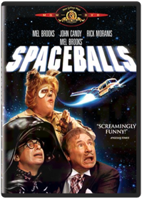 The farce is with you in this "uproarious salute to science fiction" (The Hollywood Reporter) that teams comedy legend Mel Brooks with an all-star cast of cutups including John Candy (Splash), Rick Moranis (Ghostbusters) and Bill Pullman (Ruthless People)! When the evil Dark Helmet (Moranis) attempts to steal all the air from planet Druidia, a determined Druish Princess (Daphne Zuniga), a clueless rogue (Pullman) and a half-man/half-dog creature who's his own best friend (Candy) set out to stop him! But with the forces of darkness closing in on them at ludicrous speed, they'll need the help of a wise imp named Yogurt (Brooks) and the mystical power of "The Schwartz" to bring peaceand merchandising rightsto the entire galaxy!Spawn: The Ultimate Collection 
Adult, stylish, and more than a little mean, this full-length animated tale has one very strong thing going for it—it knows how to milk "cool." The animation is superior to anything recently devoted to a superhero...or super-antihero, in this case. Al Simmons was a government assassin before he was burned to death and sent to hell (plot summary's starting out nicely, isn't it?). After making a particularly bad deal with the devil—to lead Satan's dark armies in exchange for seeing his wife again—Spawn is let loose upon the world. He immediately whacks three mob hit men, making his presence known and getting himself into all sorts of trouble. Spawn is also visited by the Clown, an obese, disgusting Beatrice, guiding our third-degree-burned Dante through this hellish, topside world. There are other nasty characters, but in this first segment a very gratuitous inclusion of a child murderer goes too far for even this mature fare. Spawn isn't fun; there's very little joy in any of this. But the point isn't fun—it's brutal, adult-comic style. And there's plenty of it. —Keith Simanton
Todd McFarlane's Spawn 2
From the mind of comic-book maestro Todd McFarlane comes the second season of episodes of the animated Spawn. Highly stylized animation and provocative story lines make Spawn a sophisticated cartoon sometimes more appropriate for older audiences. Murder victim Al Simmons has returned from hell to earth as a "hellspawn," a soldier for the army of darkness sent to collect more souls for hell. In these episodes, Spawn meets the man who assassinated him and becomes suspicious of the organization that ordered him killed. Jason Wynn, the leader of the group, plans to sell weapons of mass destruction stolen from the military. Spawn's former wife, Wanda, has since remarried Terry Fitzgerald, with whom Spawn must reconcile. Terry is hot on the trail of the missing arms, and Wynn and his assassins, including the highly trained Merrick, set out to kill Terry, Wanda, and their daughter, Cyan. Spawn foils the plot while realizing the hard truth that Wanda has a new life. —Shannon Gee
Spawn 3: The Ultimate Battle
The third chapter of this compelling HBO miniseries answers a number of questions—namely, who is the omnipotent old man who hides in the shadows and why is the mysterious Asian reporter (Jade) investigating the alley murders? Spawn has reached a crossroads, and he must choose between the forces of darkness and light. But it's not clear-cut: Al (Spawn) must deliberate over the seemingly minor differences that separate heaven and hell in his world. As a former assassin for the NSA, he "opened the eyes of hell" with his iniquitous deeds of depravity; therefore, his journey to hell was preordained. But this particular section of the series intriguingly asks, What if you had no choice, and killing was not just the only way out of a squeeze but was also your fate? Intellectual stuff, indeed. But as with the rest of the series, a profound metaphysical puzzle is brought to the fore without justifying it with an answer. It's frustrating, but also keeps you firmly planted in your chair, pondering conundrum after conundrum. —Jeremy StoreySpecies Conrad Buff IV, Roger DonaldsonThere's a kind of perverse marketing genius at work in this cheesy sci-fi hit from 1995 in which scientists create a half-human, half-alien woman named Sil (Natasha Henstridge) who's capable of morphing from a slimy, tentacled creature into a blond babe wSpecies II Richard Nord, Peter MedakHaving just returned from a mission to Mars, Commander Ross (Justin Lazard) isn't exactly himself. He's slowly becoming a terrifying alien entity with a one track mindto procreate with human women! When countless women suffer gruesome deaths after bearing half-alien offspring, scientist Laura Baker (Marg Helgenberger) and hired assassin Press Lennox (Michael Madsen) use Eve (Henstridge), a more tempered alien clone, to find Ross and his virulent brood. But they underestimate Eve's maternal drive, and before long she escapes to mate with Ross in order to create a purer and unstoppable race that could spell doom for mankind. As time is running out, the ultimate battle of human brain over alien brawn takes place in a chilling climax that puts Darwin's theory to the ultimate test and only the strongest species will survive.Speed 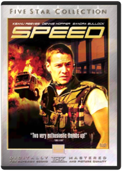 John Wright, Jan de BontEverything clicked in this 1994 action hit, from the premise (a city bus has to keep moving at 50 mph or blow up) to the two leads (the usually inscrutable Keanu Reeves and the cute-as-a-button Sandra Bullock) to the villain (Dennis Hopper in psycho mode)Spider-Man: The New Animated Series Brandon Vietti, Audu Paden, Sean Frewer, Vincent Edwards (III), Ezekiel NortonWhen a nasty bite by an irradiated spider endows teenager Peter Parker with miraculous, arachnid-like powers, his death defying heroism wins him admiration from those in need. But being a superhero has its drawbacks...especially when you're in college! As Peter gains the trust of his friends, the police call him a vigilante. But he meets the challenge by exercising his wonderful powers for the good of all. Multi-talented performer Neil Patrick Harris (Undercover Brother, Starship Troopers), television star Ian Ziering ("Beverly Hills 90210"), and singer-songwriter Lisa Loeb ("Cake and Pie"), lend their vocal talents to this thrilling, computer-animated version of the comic book classic and mega-hit feature film, Spider-Man.Spirited Away 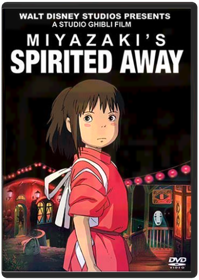 Hayao MiyazakiFrom one of the most celebrated filmmakers in the history of animated cinema comes the most acclaimed film of 2002. Hayao Miyazaki's latest triumph, filled with astonishing animation and epic adventure, is a dazzling masterpiece for the ages. It's a "wonderfully welcoming work of art that's as funny and entertaining as it is brilliant, beautiful, and deep" (Joe Morgenstern, Wall Street Journal). SPIRITED AWAY is a wondrous fantasy about a young girl, Chihiro, trapped in a strange new world of spirits. When her parents undergo a mysterious transformation, she must call upon the courage she never knew she had to free herself and return her family to the outside world. An unforgettable story brimming with creativity, SPIRITED AWAY will take you on a journey beyond your imagination. "To enter the world of Hayao Miyazaki is to experience a kind of lighthearted enchantment that is unique to the world of animation" (Roger Ebert, Chicago Sun-Times). It's a fantastic tale the whole family will want to experience over and over again.The Stand After a government-spawned "superflu" wipes out more than 90 percent of the earth's population, the devastated survivors must decide whether to support or resist the advances of a mysterious stranger from way down South (heh-heh) who wishes to claim this new world order for himself. Although the six-hour length makes it nigh-impossible to digest in one sitting, this well-paced adaptation of Stephen King's apocalyptic magnum opus ranks among the best adaptations of the author's work, with strong performances from Gary Sinise, Miguel Ferrer, and especially Jamey Sheridan as a good-old-boy version of Old Scratch. The opening scene, set to the strains of Blue Oyster Cult's "Don't Fear the Reaper," is one of the most chilling things ever shot for television. Director Mick Garris is no stranger to King's world, having also helmed Sleepwalkers, the recent television remake of The Shining, and the upcoming Desperation.Star Wars: Droids 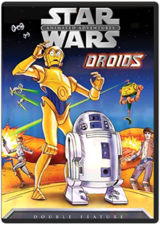 Robin Lee, T.M. ChristopherAnimated double feature of "The Pirates and the Prince" and "Treasures of the Hidden Planet" featuring various Star Wars characters, centered around C-3PO and R2-D2.Star Wars: Ewok Adventures: Caravan of Courage / The Battle for Endor Jim Wheat, John Korty, Ken WheatReading through all these people bashing these movies has me shaking my head. Really what can you expect out of television movies about Ewoks? To criticize these movies as being too childish is like criticizing the smurfs for being blue. \r\nThese movies were made for kids and not the people like me who saw the original STAR WARS movies in the theater as a kid but are now in their 30s. Really though to be able to get two movies on DVD for about half the price of a tank of gas to me sounds like an okay deal. People really should lighten up and take into account the audience these TV movies were made for.\r\nOne bright spot in these movies are some quite ambitious special effects (for TV at least).Star Wars: Ewoks star war adventure ...animatedSteamboy Takeshi Seyama, Katsuhiro OhtomoVictorian London is attacked by an army of futuristic, mechanized war machines, and only Ray Steam - the brave, young inventor who knows the astonishing secret behind the invasion force's incredible power - stands between the city's survival and ultimate destruction. Voice talent is provided by Anna Paquin, Alfred Molina, and Patrick Stewart. Extras include director's cut, subtitled and dubbed versions, featurette, interview with Katsuhiro Otomo, production drawings, animation onion skins, and more.Storm of the Century Sonny Baskin"Give me what I want and I'll go away," demands the black-eyed, stocking-capped stranger Linoge (Colm Feore), who appears in a quiet island community on the verge of the worst storm in decades and brutally bludgeons an old lady to death. Tim Daly, the town sheriff and voice of reason and moral strength, locks up the quiet madman, but the deaths pile up as Linoge acts them out from his cell like a murderous mime pulling psychic strings. Stephen King, whose original teleplay is his best work for the screen since The Stand, transforms the sleepy burg into a Peyton Place of guilty secrets and criminal activity ripped from under a blanket of small town normality while the white-out of the snowstorm completely cuts them off from civilization. Director Craig R. Baxley nicely maintains an icy tension while the waiting game goes on, perhaps a little too long, before Linoge finally reveals "what he wants" and the drama turns into a struggle for man's soul in miniature. The more ambitious special effects and set pieces sometimes disappoint but are more than made up for in King's knack for turning the mundane into the macabre (the children's song "I'm a Little Teapot" has never sounded more sinister) and a few brilliantly realized sequences, the best of which occurs when townspeople are literally yanked out of existence while watching the storm. Storm of the Century is one of the most successful translations of King's brand of horror to the screen. —Sean AxmakerStreet Fighter II: The Animated Movie Gisaburo SugiiAll the lightning-fisted thrills of the world’s wildest combat video game series explodes onto DVD in this brilliantly animated, sensationally supercharged adventure, Street FighterTM II: The Animated Movie. This all new unedited and uncensored version now boasts a stunning new 5.1 surround sound mix of the equally popular soundtrack. In the not too distant future, civilization is under attack. Leading the forces of darkness is the evil mastermind Bison, who is determined to capture the minds and bodies of the world’s greatest fighters for use in his manic plan to conquer the world. The only people on Earth with the potential to stop him are Ken and Ryu, two powerful legendary martial arts warriors. Together they face the fights of all fights. The final battle of good against evil is about to begin!Super Mario Bros. Annabel Jankel, Rocky MortonBuckle up and hang on tight — the discovery of a parallel universe launches you into the adventure of a lifetime! Mario and Luigi, two wacky plumbers, undertake a daring quest to save a princess in "Dinohattan" — a hidden world where the inhabitants evolved from dinosaurs! Mario (Bob Hoskins — WHO FRAMED ROGER RABBIT) and Luigi (John Leguizamo — REGARDING HENRY) face deadly challenges from a diaboloical lizard king (Dennis Hopper — HOOSIERS) and must battle giant reptilian goombas, outwit misfit thugs, and undermine a sinister scheme to take over the world! Blast off for nonstop excitement with SUPER MARIO BROS., the live-action thrill ride that dazzled moviegoers everywhere!Taken Prepare to get Taken for the ride of your life! “Liam Neeson is an unstoppable force” (Premiere) in this action-packed international thriller that will have you on the edge of your seat from start to finish. When his estranged teenage daughter (Maggie Grace) is kidnapped in Paris, a former spy (Neeson) sets out to find her at any cost. Relying on his special skills, he tracks down the ruthless gang that abducted her and launches a one-man war to bring them to justice and rescue his daughter.
Audio: English: 5.1 Dolby Surround / Spanish & French: Dolby SurroundLanguage: Dubbed & Subtitled: English, French & SpanishTheatrical Aspect Ratio: Widescreen 2.40:1Tales From the Crypt: Demon Knight & Bordello of Blood Ernest R. Dickerson, Gilbert AdlerStudio: Uni Dist Corp. (mca) Release Date: 09/07/2004 Rating: RTales from the Crypt: Season 1 Walter Hill, Robert Zemeckis, Richard DonnerBased on the legendary and gruesome EC Comics from publisher William Gaines, this horror anthology featured stories of murder, the super natural, gore and humor and always had a twist ending of sorts. Some of Hollywood's biggest names took part, either working in front or behind the camera. Hosting duties fell to everyone's favorite decaying corpse, the Cryptkeeper. The success of this series spawned a Saturday morning cartoon series (Tales From the Cryptkeeper), a short-lived Saturday morning game show on CBS (Secrets of the Cryptkeeper's Haunted House) and lots of merchandise. Two feature films (Demon Knight and Bordello of Blood) were also produced and released in the late 90's. The TV series originally aired on HBO, but was later syndicated to Fox, the Sci-Fi Channel, and most recently AMC. Despite being a short season (only 6 episodes), Season 1 enjoyed the highest ratings in its HBO airings.Tales from the Crypt: Season 2 Arnold Schwarzenegger, Charlie Picerni, Chris Walas, David Burton Morris, Fred DekkerTwo scary! Welcome, fiends. Back for more deadtime stories, hmm? Then settle in with these devious die-monds of die-abolical delight - all 18 uncut (but variously stabbed, electro-volted, haunted, twisted, incarcerated, incarnated, voodoo-ized and even vampirized) episodes from two-riffic Season 2 of Tales from the Crypt! The Cryptkeeper is again your gleefully macabre host for a frightfest of classic E.C. Comics stories involving a for-the-money honey (Demi Moore) hoping for a big, fat inheritance; a cartoonist (Harry Anderson) whose creations come to life (and death); a ventriloquist (Don Rickles) and an idolizing wannabe (Bobcat Goldthwait); and poker players for whom a losing hand could mean exactly that. Ante up for these and more tales. We think you'll agree they're absolute monsterpieces.
DVD Features:
Documentary
Interactive Menus
OtherTales from the Crypt: Season 3 Steve Perry, Russell MulcahyWhat's sinew, weirdos? All of you who say "This fabulous third-season collection of Tales from the Crypt" go to the head of the crass. And take your best fiend with you! Yes, that die-abolical punster and bone-a-fide ghoul of your dreams the Crypt Keeper is back to host this scare-rific collection of all 14 complete and uncut episodes from Season 3 of the series that ran seven memorably spooktacular seasons. Among the tales spilling out of the vault are Loved to Death with Mariel Hemingway; Top Billing starring Jon Lovitz; and Dead Wait with Whoopi Goldberg. Doo yourself a favor and dig into this merrily macabre mix.
DVD Features:
Music Video:Crypt Jam
Other:A Tall Tales Panel: A Dissected Look at Tales from the Crypt Season 3 A Tales from the Crypt Reunion: A Panel DiscussionTales from the Crypt: Season 4 Kyle Mac Lachlan, Joel Silver, Gilbert AdlerMonsters. Madness. Mayhem. BAD PUNS! What kind of bonehead would do this? Oh, that kind of bonehead: the Crypt Keeper. Yes, four the beast in humor and horror, this is it: all 14 complete, uncut Season 4 episodes hosted by that netherworld naughty boy, the Crypt Keeper. Offered four your warped amusement are Split Personality, with a lounge lizard getting more than he bargains four when he marries identical twins; Werewolf Concerto, with Timothy Dalton on the hunt four a lupine fiend; Beauty Rest, with Mimi Rogers as an actress who'd kill four a part. Plus Brad Pitt, Treat Williams, and Cathy Moriarty are here four more fright-'n'-fun tales. Did we mention these are all in Season 4? Go four it!
DVD Features:
Audio Commentary
FeaturetteTales from the Crypt: Season 5 Bob Gale, Elliot Silverstein, Gary Fleder, Gilbert Adler, Gregory WidenTomb it may concern. Yes, you. No one else is reading this, right? Besides, you're the ideal person for this happily haunted collection of scares and silliness ? someone warm and bleeding. Sorry, breathing. The Cryptkeeper delivers more keepers (and terrorific Spookcial Feartures) with this atmosfearic Season 5. Ready to delight your feverishly warped mind are Forever Ambergris, with Steve Buscemi and Roger Daltrey portraying war photographers; Two for the Show, with Traci Lords, David Paymer and Vincent Spano embroiled in a tale of wife and death; Well Cooked Hams, with Martin Sheen and Billy Zane putting hocus pocus in focus as rival magicians; plus 10 more eerie encounters of fate, fiends and flat-out funniness. Lullaby and good fright, kiddies!Tales from the Crypt: Season 6 It's that time of fear again! So if you've been missing the Crypt Keeper, here's a chance to improve your aim. But be warned: It'll be a fright to the finish. The cadaverous cut-up is your host for a 15-episode die-gest based on classic horror comics from back in the day and featuring a parade of characters who are variously merciless, clueless, topless and headless. Hank Azaria, Shelley Hack, Isaac Hayes, Richard Lewis, John Lithgow, Wayne Newton, Isabella Rossellini, Rita Rudner and Humphrey Bogart (you read that right) are among the stars. And vampires, mad doctors, killers, ghosts and adulterers are eager to come out and play. We could tell you more, but that would be wrong. You do know rot from wrong, don't you?Team America: World Police Trey ParkerIn TEAM AMERICA: WORLD POLICE, a group of marionette puppets form Team America, an international police force dedicated to maintaining global stability. Discovering that a power hungry dictator, Kim Jong II, plans to destroy the world and is brokering weapons of mass destruction to terrorists, the team enlists the undercover help of Broadway star Gary Johnston and embarks on a harrowing mission to save the world. Opposed to this, is the Film Actors' Guild, or F.A.G., whose members include puppets representing actors Alec Baldwin, Tim Robbins, Matt Damon, Susan Sarandon and Sean Penn. In spite of the lack of support they receive, the team sticks to their plan of saving the world and putting an end to terrorism.Teenage Mutant Ninja Turtles: Season 1 Meet the Teenage Mutant Ninja Turtles the most irreverent reptiles in the universe! These are the first classic animated episodes that tell the origination of Leonardo Michaelangelo Raphael and Donatello. Once tiny pet store turtles an accident hurtles them into the city sewer where mutant goo transforms them into something... well something else! Fighting for good against the malevolent Shredder and his Technodrome these pizza-eating daredevils are a funny phenomenal foursome.System Requirements: Running Time 93 MinFormat: DVD MOVIE Genre: CHILDREN/FAMILY Rating: NR Age: 5 UPC: 012236119135 Manufacturer No: 11913Teenage Mutant Ninja Turtles: Volume Two Join the hottest Heroes in a Half-Shell - Leonardo Michelangelo Raphael and Donatello - as they battle for good against gnarly Ninja bad guys in Season Two of Teenage Mutant Ninja Turtles!DVD Bonus FeaturesFull Screen2.0 Digital Stereo SerroundDigitally Enhanced for Superior ClaritySystem Requirements: Running Time 289 MinFormat: DVD MOVIE Genre: CHILDREN/FAMILY Rating: NR UPC: 012236174004 Manufacturer No: 17400Teenage Mutant Ninja Turtles: Volume 3 12 episodes from Season 3 of the Original TV Series: Beneath These Streets, Turtles on Trial, Attack of the 50 Foot Irma, Maltese Hamster, Sky Turtles, Old Switcheroo, Burne's Blues, Fifth Turtle, Enter the Rat King, Turtles At the Earth's Core, April's Fool, and Attack of Big MACCTeenage Mutant Ninja Turtles: Volume 4 Includes 12 episodes from Season 3 of the Original TV SeriesTeenage Mutant Ninja Turtles: Volume Five Includes 12 episodes from Season 3 of the Original TV SeriesTeenage Mutant Ninja Turtles: Volume 6 Artist Not ProvidedThe Turtles are back with 12 action-packed episodes from the original TV series!! Episdoes include: The Turtle Terminator, The Great Boldini, The Missing Map, The Gang's All Here, The Grybyx, Mr. Ogg Goes to Town, Shredderville, Bye, Bye Fly, The Big Rip-Off, The Big Break-In, The Big Blow Out amd Plan 6 from Outer Space.Teenage Mutant Ninja Turtles: Season 4 You'll yell, "Cowabunga!" as the turtles shred their way into your heart in 40 episodes from Season Four of their awesome hit series. Michaelangelo, Raphael, Leonardo, and Donatello are bringing it to the most dastardly ensemble of evil-doing freaks, mutants, and bad dudes you've ever seen. Don't even think of missing the most radical action ever to mutate onto DVD.Teenage Mutant Ninja Turtles: Season 5 Artist Not ProvidedDishing up Season 5 in 3 hot DVDs! Dudes! Your order for hot and fresh kung-fu adventures is ready. In 18 wicked episodes from the original series, Leonardo, Michaelangelo, Raphael, and Donatello deliver totally radical mutant action right to your door - and all the tasty extras you want are included. Cowabunga! Any way you slice it, their way of saving the day is gnarly.Teenage Mutant Ninja Turtles: Season 6 KABOOM! In 1984 the Turtles exploded from the pages of a comic book, and ZAP! - they totally mutated into the coolest reptiles in the universe. In all 16 gnarly episodes from Season 6 of the Original TV series, Leonardo, Michelangelo, Raphael, and Donatello open up the classic action that made "Cowabunga!" a household word. Don't miss your chance to knock out the bad guys and save the day - POW!Teenage Mutant Ninja Turtles: Season 7 Celebrate the 25th anniversary of the TEENAGE MUTANT NINJA TURTLES with all 4 Classic Season 7 slices on DVD in this Complete Season 7 Set! It’s been 25 awesome years (whoa!) since four turtles fell into the sewers and were transformed into radical human-like creatures. Now the classic TV series about their gnarly adventures has gone on to be a righteous hit with fans everywhere, making "Cowabunga!” a household word.Teenage Mutant Ninja Turtles: Season 8 Break out of your shell with the Complete Season 8 in these ninja-powered adventures. The Green Machine is back with heart-pounding , pizza-munching, right-outta-the-sewer ninja action! The gang’s all here – Michelangelo™, Leonardo™, Raphael™, and Donatello™, and their wise sensei, Splinter – as they battle enemies from our time, and beyond, to protect the citizens of the city they call home, even banishing archenemies, Shredder™ and Krang™, to Dimension X™. Discover the intriguing, darker atmosphere and new theme song that defined this groundbreaking season. These eight dynamic adventures will get your pulse pumping with mutant power! Cowabunga, dudes! Eight radical episodes include: "Get Shredder!" "Wrath of the Rat King," "State of Shock," "Cry H.A.V.O.C.!" "H.A.V.O.C. in the Streets," "Enter: Krakus," "Cyber-Turtles," and "Turtle Trek."Teenage Mutant Ninja Turtles: Season 9 Join the Teenage Mutant Ninja Turtles as they face off against new opponents: the evil Lord Dregg and Hi-tech, while also fighting against their own uncontrollable mutations in the mind-bending Season 9! With the help of Carter, a new ninja ally, Michelangelo, Leonardo, Raphael, and Donatello - struggle to stop Lord Dregg from enslaving Earth, while overcoming Replicon, a battle droid that regenerates after each defeat. Featuring nonstop, sewer to-street action, these eight adventures will leave you wanting more turtle power! Includes 8 Shell-Busting Episodes: The Unknown Ninja, Dregg of the Earth, The Wrath Of Medusa, The New Mutation, The Showdown, Split-Second, Carter the Enforcer, Doomquest.Teenage Mutant Ninja Turtles: Season 10 Roy Burdine, Chuck PattonLeonardo, Donatello, Raphael and Michelangelo are back in the classic final season that pits turtles from the past and present against the evil Lord Dregg and his minions. Determined to enslave mankind, Dregg will stop at nothing to win - causing a piece of the sun to crash into Earth, opening a giant portal to pull the planet into Dimension X, and even draining the life energy from the Teenage Mutant Ninja Turtles! Carter soon realizes that the only way to defeat Dregg, Krang and Shredder is to bring the Turtles' past selves to the present - double the Turtle power! But will they make it in time before Dregg's invasion is complete? Featuring time-warping serious Turtle muscle, season 10 is a totally tubular finale!Teenage Mutant Ninja Turtles: Season 1: Part 1 Chuck PattonIn 2003, 4Kids and Mirage Studios joined forces to bring those heroes on the half-shell back to TV...but this time, they mean business.
This Teenage Mutant Ninja Turtles series was inspired by the original, darker and edgier comics that made their debut in 1984. With significant input from Teenage Mutant Ninja Turtles, co-creator Peter Laird, the episodes are based on those early storylines and a graphic visual style comic fans love.
Watch as the Turtles evolve from four talented but inexperienced martial arts "brawlers" into a well-honed fighting unit taught by their sensei Master Splinter. Join them as they take on they take on their arch nemesis, the Shredder. Be there as each saga unfolds and our heroes learn that teamwork is one of their most powerful assets.
Contains 12 episodes on 2 discs!Teenage Mutant Ninja Turtles: Fast Forward: Volume 1: Future Shellshock! Artist Not ProvidedThe Turtles and Splinter suddenly find themselves in a futuristic world inhabited by a "melting pot" population of humans and aliens. Who's responsible for this mess? Why none other than Cody Jones, Casey and April's fourteen-year old great grandson, who accidentally pulled the Turtles through a "time window" to the year 2105!
Future Shellshock contains 13 action-packed episodes on 2 discsTeenage Mutant Ninja Turtles: Fast Forward: Volume 2: The Day of Awakening The Day of Awakening is at Hand!
When the entire populatoin of Moonbase Bishop goes missing, it appears that Sh'Okanabo has jump started his plan to take over the Earth. The Turtles stage an assault on the base, only to find a bigger, baddder Sh'Okanabo - with an army of Kanabo Drones hiding on the dark side of the moon! And, to add to the chaos, Darius continues to ruin the lives of the Turtles with his evil "Dark Turtles" as he tries to take over Cody's company.
Contains 13 exciting episodes on 2 discs.Tenacious D in The Pick of Destiny Liam LynchActors/musicians Jack Black and Kyle Gass bring their infamous rock duo Tenacious D to the big screen! The hilarious story of how "The D" became the self-proclaimed greatest band on earth, Tenacious D in: The Pick of Destiny follows the pair's plan to steal a supernatural guitar pick on display in a rock-and-roll museum in order to create a masterpiece song that will cement their place in music history.Tenacious D: The Complete Master Works Spike Jonze, Dave Skinner, Gabe Swarr, Liam Lynch, Tom GianasWith pitchfork and shovel, Tenacious D has labored to finally unearth the first ever Tenacious D-VD from the fragrant bowels of Hades. For years, this turd has been spit-polished, massaged, and finally sanctified by both Jables and KG, and they are now ready release it to the world.
This highly provocative DVD contains the legendary and epic recital at London's Brixton Academy that was by chance recorded on November 3, 2002. Watch as Jack and Kyle slay the mighty dragon and treat the British public to a phenomenal performance that includes the now classic D melodies; Wonderboy, Explosivo, Kyle Quit The Band, Friendship, Kielbasa, Dio, The Cosmic Shame, F#*! Her Gently, Tribute and the ever popular Live Short Films that have been screened during The D's shows.
The Complete Masterworks also contains the groundbreaking, hard to get (legally), HBO episodes which tell the tale of The D in their early days on the road to stardom.
But that's not all! Act now and a bonus second disc will be gifted to the first twelve million loyal Tenacious D apostles, included is an intimate portrait of Jack and Kyle and their life of carnal debauchery on the road. Lucky owners of the DVD will catch rare and gruesome behind the scenes glimpses of the making of the Tribute & Wonderboy videos as well as never before seen footage of The D as they perform their secret backstage rituals. TENACIOUS D: THE COMPLETE MASTERWORKS is truly a harbinger of the good times ahead as we all await the coming apocalypse.The Texas Chainsaw Massacre Marcus NispelJessica Biel, Eric Balfour, R. Lee Ermey. Inspired by a true story, a group of teens on a road trip take a detour that turns deadly when that wrong turn draws them into a chilling nightmare exposing their darkest fears and murder at the hands of Leatherface. 2 DVDs. 2003/color/98 min/R/widescreen.The Texas Chainsaw Massacre Tobe HooperThe ultimate version of a classic horror film. Painstakingly restored from the original 16mm ECO negatives, this special edition presents Tobe Hooper's classic film as you've never seen it before. Now...step into the twisted world of the ultimate dysfunctional family and rediscover the total madness of "The Texas Chainsaw Massacre". Includes: audio commentary featuring Tobe Hooper, director of photography Daniel Pearl and Gunnar Hansen ("Leatherface"), 30 minutes of deleted scenes and outtakes, blooper reel, original theatrical trailers and television spots and still photos. Starring: Marilyn Burns, Paul A. Partain, Edwin Neal, Jim Siedow, Gunnar Hansen.Tomorrow Never Dies  Tool: Salival Chris Hafner, Ken Andrews, Michael Mees, Adam JonesLimited Edition DVD versionTotal Movie: DoubleDouble Feature Pack Total Recall Paul VerhoevenDirector Paul Verhoeven and star Arnold Schwarzenegger have their own ideas about what's really going on in Total Recall, and offer an entertaining commentary track on Artisan's special limited edition. They make their case, to the glee of conspiraTransformers: Season 1 John Gibbs, John Walker, Peter WallachThe 1985 series Tatakae Cho Robot Seimetai Transformers ("Fight Super Living Robots Transformers") was a U.S.-Japanese coproduction, written in America and animated in Japan. Based on a line of robot toys from Takara—licensed to Hasbro in America—that could be reconfigured into cars, trucks, planes, etc., it spawned numerous sequels and a feature. Civil war rages on the planet Cybertron between the virtuous Autobots and the evil Decepticons. Both sides launch crews into space to find new energy sources, but the ships crash on Earth and are buried in lava. When the robots awaken four million years later, the Decepticons, led by the dictatorial Megatron, want to drain the planet of its resources, enslaving or destroying mankind. The Autobots ally with humanity and befriend oil-rig worker Spike Witwicky. The Saturday morning-style cheat of cutting to a logo, rather than animating transitions, and the frequent pauses for commercial breaks make for very choppy storytelling. The designs of the robots are interesting but lack the graphic sophistication of Yoshiyuki Tomino's Gundam Mobile Suits. The animation is very limited, and the choreography of the battle sequences lacks the panache of Tomino and other more talented directors. Like Robotech, Transformers will appeal most strongly to adults who watched the show as kids: it's remained popular through Web sites, role-playing games, fan fiction, and a lively trade in the original toys. Serious students of anime will find this early series of historic interest. Unrated; suitable for age 6 and up: Robot vs. robot violence. —Charles SolomonTransformers: Season 2 Part 1 Al Kouzel, Andy Kim, Bob Kirk, Bob Matz, Bob TreatEarth is the battleground, control of the Universe is the prize, and the only defense is an army of Autobots able to transform into massive fighting machines as powerful as their enemy—the deadly Decepticons. Each boxed set includes 2 limited edition cels of Transformer characters. All episodes are in chronological order based on original airdate.
Episodes: AUTOBOT SPIKE • CHANGING GEARS • CITY OF STEEL • ATTACK OF THE AUTOBOTS • THE TRAITOR IMMOBILIZER • AUTOBOT RUN • ATLANTIS, ARISE! • MACHINE REBELLION • ENTER THE NINJA • A PRIME PROBLEM • THE CORE • INSECTICON SYNDROME • DINOBOT ISLAND #1 • DINOBOT ISLAND #2 • MASTER BUILDERS • AUTO BERSERK • MICROBOTS • MEGATRON’S MASTER • PLAN #1 • MEGATRON’S MASTER PLAN #2 • DESERTION OF THE DINOBOTS #1 • DESERTION OF THE DINOBOTS #2 • BLASTER BLUES • A DECEPTICON RAIDER IN KING ARTHUR’S COURTTransformers: Season 2 Part 2 Al Kouzel, Andy Kim, Bob Kirk, Bob Matz, Bob TreatBased on a line of robots from Takara that was licensed to Hasbro, Transformers sparked a craze for metamorphic toys in the mid-'80s. Each robot-character could be reconfigured to form a car, a tank, a plane, etc. The Transformers series (Tatakae Cho Robot Seimetai Transformers or Fight Super Living Robots Transformers) was written in America, but animated in Japan. The 24 episodes in this collection, which ran between October 1985 and January 1986, conclude the second season and lead up to Transformers 2006. Each episode forms a self-contained story, with little in the way of larger character arcs or plot developments tying them together. Although the cast has expanded, the Autobots remain the good guys who defeat the bad guy Decepticons, and no one expects anything else. Although the character designs and animation are Japanese, the direction is pure American Saturday morning: instead of creating effective transitions, the filmmakers just cut to a shot of the logo—a standard practice in Hanna-Barbera kidvid. Web sites, role-playing games, fan fiction, and a brisk commerce in the original toys have kept Transformers alive in the hearts of its fans. But like Robotech, Transformers will appeal most strongly to nostalgic adults who watched the show as kids. (Unrated: suitable for ages 6 and older: robot vs. robot violence) —Charles SolomonTransformers: The Movie Nelson ShinMint Condition! Collector's Edition! Ships within 24 hours!!Transformers: Season 3 Part 1 Andy Kim, Peter Wallach, Ray LeeTransformers Season 3 Box Set Part 1 video Animated; Standard Screen; Dolby Digital 5. Transformers Season 3 Box Set Part 1 film 1 ReTransformers - Season 3: Box Set - Part 1 DVD: A special collector's edition boxed set containing the first 16 episodes of the third season of TRANSFORMERS, the mega-popular animated television series based on one of most successful toy lines ever made. Each digitally remastered episode is presented in chronological order based on original airdate..Transformers: Season 3 Part 2 / Season 4 Andy Kim, Peter Wallach, Ray LeeTwin Peaks: The First Season Caleb Deschanel, David Lynch, Duwayne Dunham, Lesli Linka Glatter, Mark FrostTwin Peaks devotees, who have kept the mystery alive on myriad Web sites, will jump at the chance to return to the spooky town that might just be the anti-Mayberry. Rarely syndicated, the Twin Peaks television series has lost none of its quirky and queasy power to get under your skin and haunt your dreams. So brew up a pot of some "damn fine coffee," dig into some cherry pie, and lose yourself in David Lynch and Mark Frost's murder mystery and soap opera, which unfolds, in one character's words, "like a beautiful dream and terrible nightmare all at once." Twin Peaks was a pop culture phenomenon for one season at least, until the increasingly bizarre twists and maddening teases so confounded audiences that they lost interest in just who killed Laura Palmer (Sheryl Lee). This series was a career peak for most of its eclectic ensemble cast, including Kyle MacLachlan as straight-arrow FBI Special Agent Dale Cooper, Michael Ontkean as local Sheriff Harry S. Truman, Sherilyn Fenn as bad girl Audrey Horne, Peggy Lipton as waitress Norma Jennings, and Catherine Coulson as the Log Lady. Alumni enjoying current success include Lara Flynn Boyle ("The Practice"), as good girl Donna Hayward, and Miguel Ferrer ("Crossing Jordan"), hilarious as forensics expert Albert Rosenfield (who has absolutely no "social niceties"). This four-disc set contains the first season's seven episodes, minus, curiously, the series pilot. Newcomers will be scratching their heads over the "Previously on Twin Peaks" prologue, but an accompanying booklet sums up the story. Special features include episode introductions by the Log Lady (originally broadcast on Bravo), commentaries by assorted episode directors (but not Lynch), and features from the archives of the fanzine Wrapped in Plastic. —Donald LiebensonTwin Peaks: Fire Walk with Me Sheryl Lee, Kyle MacLachlan. The enigmatic and fascinating movie furthers the mystery of Laura Palmer, serving as both an ending and a beginning to the hit series. 1992/color/134 min/R/widescreen.The Ugly Truth Katherine Heigl and Gerard Butler star in this wildly funny battle of the sexes. Abby (Heigl), a successful morning show producer, is looking for a lot in a man. Mike (Butler), her obnoxious TV star, knows men only want one thing. Determined to prove that she's not romantically challenged, Abby takes Mike's advice during a promising new romance, but the unexpected results will stun everyone.UHF Jay Levey"Weird Al" Yankovic, Kevin McCarthy (Innerspace), Michael Richards ("Seinfeld"), David Bowie (The Cable Guy), Victoria Jackson ("Saturday Night Live") and Fran Drescher ("The Nanny") star in this inspired comedy about an offbeat guy who turns a deadbeat TV station into a raging success! Broadcasting Weird Al's uniquely strange brand of humor, UHF's Channel 62 is a place you'll want to visit...with increasing frequency! George Newman (Weird Al) is a daydreamer whose hyperactive imagination keeps him from holding a steady job...until his uncle hires him as manager of Channel 62, a TV station that's losing money and viewers fast. But when George replaces the station's reruns with bizarre programs like "Wheel of Fish," "The Wonderful World Of Phlegm" and "Raul's Wild Kingdom" (where poodles fly from third-story windows), ratings begin to soar! But as the ratings rise, so does the wrath of TV mogul R.J. Fletcher (McCarthy), who wants to turn the station into a parking lot. Can George find the money he needs to stay on the air? Stay tuned!Unbreakable M. Night ShyamalanBruce Willis and Samuel L. Jackson star in a mind-shattering, suspense-filled thriller that stays with you long after the end of this riveting supernatural film. After David Dunn (Willis) emerges from a horrific train crash as the sole survivor — and without a single scratch on him — he meets a mysterious sranger (Jackson). An unsettling stranger who believes comic book heroes walk the earth. A haunting stranger, whose obsession with David will change David's life forever.Vampire Hunter D Carl Macek, Toyoo AshidaIn the year 12090 ad the earth has fallen into the clutches of ruthless vampires and humans are enslaved by a corrupted feudal system prey to a mockery of freedom and justice. Only one being has dared to challenge the cruel authority of these vicious arrogant immortals the mysterious vampire hunter called d. Studio: Urban Vision Release Date: 02/16/2001 Run time: 80 minutes Rating: NrVampire Hunter D: Bloodlust Yoshiaki KawajiriStudio: Urban Vision Release Date: 02/12/2002Walking With Dinosaurs Get ready to go back 65 million years and come face to face with the largest creatures ever to roam the landscape with this BBC documentary series. Amazing computer graphics and the latest scientific data tell the story of how the dinosaurs lived, thrived and ultimately perished. Kenneth Branagh narrates. 3 3/4 hrs. on two discs. Widescreen (Enhanced); Soundtrack: English Dolby Digital Surround, Subtitles: English, Spanish; "making of" documentary.War of the Worlds Steven SpielbergThis film is about the 4 superheroes.Wayne's World 1 & 2: The Complete Epic Penelope Spheeris, Stephen Surjik1992/93 Color PG-13 Region 1The Wedding Singer Frank CoraciIt's 1985 and Adam Sandler is the ultimate master of ceremonies...until he is left at the altar at his own wedding. He starts to pick up the pieces of his heart after meeting Drew Barrymore but she's about to have a wedding of her own.
DVD Features:
Interactive Menus
Music Video
Photo gallery
Production NotesWeird Al Yankovic: Live This 90 minute DVD features the ebullient Weird Al, live a t the Marin Center in San Rafael, California, on Oct. 2, 19 99. The songs include Gump, and more. The video also inc ludes the clips Running With Scissors & It's All About the Pentiums.Weird Al Yankovic: The Videos 'Weird Al' Yankovic, Dror Soref, Janet Greek, Jay Levey, Mark OsborneWeird Al Yankovic has entertained people for over a decade with his witty song parodies and hilarious video spoofs of some of music's biggest hits. Here at last is a compilation of Al's video's from "Ricky" to "Gump." Songs: Ricky, I Love Rocky Road, Eat It, I Lost on Jeopardy, This is the Life, Like a Surgeon, One More Minute, Dare to Be Stupid, Living with a Hernia, Christmas at Ground Zero, Far, Beverly Hillbillies/Money for Nothing, UHF, Smells Like Nirvana, You Don't Love Me Anymore, Jurassic Park, Bedrock Anthem, Headline News, Amish Paradise, Gump, Spy Hard.Wild Things Elena Maganini, John McNaughtonSwamp princess Neve Campbell and vixen Denise Richards are high school students who shock their posh South Florida town by accusing counselor Matt Dillon of rape, but that's only the beginning of the twisted, erotic goings-on in this steamy tale of deception, seduction and a multi-million-dollar scam. Kevin Bacon, Theresa Russell, and Bill Murray also star; from director John McNaughton ("Henry: Portrait of a Serial Killer"). 108 min. Standard; Soundtracks: English Dolby Digital 5.1, Dolby Digital stereo, French Dolby Digital stereo; Subtitles: English, French; audio commentary; deleted scenes; theatrical trailers.Willard Glen MorganA lonely, awkward misfit tormented by his boss on a daily basis turns to rats for friendship...and revenge.
DVD Features:
Audio Commentary:Director Glen Morgan, producer James Wong, Crispin Glover and R. Lee Ermey
DVD ROM Features
Deleted Scenes:12 Deleted Scenes
Documentaries:"Year of the Rat" - Behind-the-scenes Documentary on the making of Willard "Rat People-Friend or Foe?" Documentary
Full Screen Version
Music Video:Crispin Hellion Glover's "Ben" w/optional commentary
TV Spot:Three TV spots
Theatrical TrailerWilly Wonka and the Chocolate Factory A poor little boy wins a ticket to visit the inside of a mysterious and magical chocolate factory. When he experiences the wonders inside the factory, the boy discovers that the entire visit is a test of his character.Wonderfalls "From the producer of Angel and Firefly comes Wonderfalls with 9 never aired episodes. Although a recent graduate of Brown University, Jaye Tyler decides to ignore her degree, live in a trailer and work at a tourist gift shop in Niagara Falls called Wonderfalls—-much to the despair of her well-to-do family. But Jaye’s aimless life takes a startling turn after a lion figurine begins talking to her. Her family calls it an "episode," but Jaye knows better.
Fearing for her sanity, Jaye nevertheless starts doing exactly what an increasing number of inanimate objects tell her to do and is amazed when her outrageous actions begin changing people’s lives in unexpected ways. "The World Is Not Enough Michael AptedCharged with protecting a murdered oil tycoon's beautiful daughter, James Bond (Pierce Brosnan) must stop a ruthless terrorist—left impervious to pain by a bullet lodged in his skull—who's stolen a Russian nuclear weapon as part of a plan to control the world's oil supply. With Robert Carlyle, Sophie Marceau, Denise Richards, Judi Dench, and John Cleese as new gadget man "R." 128 min. NOTE: This Title Is Out Of Print; Limit One Per Customer. Widescreen; Soundtracks: English DTS, Dolby Digital 5.1, French Dolby Digital 5.1; Subtitles: English, French, Spanish; audio commentary.The X-Files: Season 1 Daniel Sackheim, David Nutter, Fred Gerber, Harry Longstreet, Jerrold FreedmanGet reacquainted with Dana Scully (Gillian Anderson), Fox Mulder (David Duchovny), and all the clever plots dealing with the occult, monsters, urban legends, conspiracy theories, and the rest that made this show an uncanny hit.The X-Files: Season 2 Chris Carter, Daniel Sackheim, David Nutter, James A. Contner, James Whitmore Jr.Now you can own the entire second season of THE X-FILES. ALL 25 classic episodes are available for the first time in this exclusive collector's edition. From "Little Green Men," "Duane Barry," and "Ascension" to "One Breath," "Irresistible," "Humbug" and "Anasazi," these episodes are a must for every X-Files fan.
This 7-disc set also includes some of your favorite scenes dubbed in languages from around the world and episode listings for the show's entire seven seasons.The X-Files: Season 3 Chris Carter, David Nutter, Jim Charleston, Kim Manners, R.W. Goodwin7 dual layered discs with all 24 episodes from the 3rd season:
Disc 1 - The Blessing Way, Paper Clip, D.P.O., Clyde Bruckman's Final Repose, deleted scenes, international clips
Disc 2 - The List, 2Shy, The Walk, Oubliette, deleted scenes, international clips
Disc 3 - Nisei, 731, Revelations, War of the Coprophages, deleted scenes, special effects clips, international clips
Disc 4 - Syzygy, Grotesque, Piper Maru, Apocrypha, special effects clips, commentary, international clips
Disc 5 - Pusher, Teso Dos Bichos, Hell Money, Jose Chung's "From Outer Space", special effects clips, international clips
Disc 6 - Avatar, Quagmire, Wetwired, Talitha Cumi, deleted scenes, international clips
Disc 7 - All New Documentary - "The Truth About Season Three," 12 interviews with Chris Carter, special effects clips, behind the scenes, deleted scenes, behind the truth spots on 17 episodes, promo spots on all 24 episodes, all new DVD-ROM game - "Unholy Alliances"The X-Files: Season 4 Cliff Bole, James Wong, Jim Charleston, Kim Manners, Michael LangeNow you can own the entire fourth season of THE X-FILES™. ALL 24 classic episodes are availale for the first time in this exclusive 7-disc collector's edition. From "Herrenvolk," "Home," "Tunguska," and "Terma" to "Memento Mori," "Max," "Small Potatoes," and "Gethsemane," these Season Four episodes are a must for every X-Files fan.The X-Files: Season 5 Allen Coulter, Brett Dowler, Chris Carter, Cliff Bole, Daniel SackheimThis collection documents all the truth that was out there during the 1997-8 campaign of the beloved science fiction series, THE X-FILES. Fox Mulder (David Duchovny) and Dana Scully (Gilian Anderson) track suspicious cases that may be attributed to the supernatural or involve interplanetary activity. Memorable moments from this season include Mulder's appearance on Jerry Springer's talk show and Scully working with her partner to fake Mulder's death. Episodes include "Foiie a Deux," "Chinga," "Kill Switch," "Redux," and "Bad Blood," a favorite episode among fans dealing with vampirism.The X-Files: Season 6 THE UNBELIEVABLE BECOMES UNDENIABLE. Now you can own the entire sixth season of THE X-FILES(tm). All 22 classic episodes are available for the first time in this exclusive 6-disc collector's edition. From "The Beginning," "Dreamland" and "How the Ghosts Stole Christmas" to "Two Fathers," "One Son" and "Biogenesis," these Season Six episodes are a must for every X-Files fan.The X-Files: Season 7 Chris CarterNow you can own the entire seventh season of THE X-FILES™. ALL 22 classic episodes from David Duchovny's last full season as Agent Fox Muler are available for the first time in this exclusive 6-disc collector's edition. From Scully discovering the alien spacecraft in "The Sixth Extinction" and Mulder finally learning the truth about his sister in "Closure," to Mulder's own disappearance and Scully's miraculous pregnancy in "Requiem," these Season Seven episodes are a must for every X-Files fan!The X-Files: Season 8 Barry K. Thomas, Chris Carter, Frank Spotnitz, Kim Manners, Peter MarkleNow you can own the entire eighth season of THE X-FILES™. ALL 21 classic episodes are available for the first time in this exclusive 6-disc collector's edition. From the arrival of Agent John Doggett in "Within" and Mulder's miraculous resurrection in "Deadalive" to the birth od Scully's baby in "Existence," these Season Eight episodes are a must of every X-Files fan!The X-Files: Season 9 David Duchovny, Chris Carter, Cliff Bole, Dwight H. Little, Frank SpotnitzNow you can own the entire ninth season of THE X-FILES™. All 19 classic episodes (including the 2-hour series finale) are available for the first time in this exclusive 7-disc collector’s edition. From the revelation about Scully’s baby in "Nothing Important Happened Today" and the mystery surrounding the murder of Agent Doggett’s son in "Release" to Mulder’s final confrontation with those who would deny "The Truth," these Season Nine episodes are a must for every X-Files fan! |


 Made with Delicious Library
Made with Delicious Library